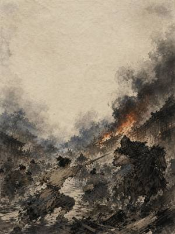
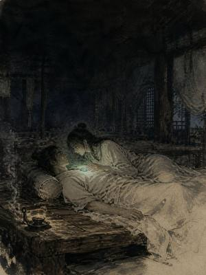
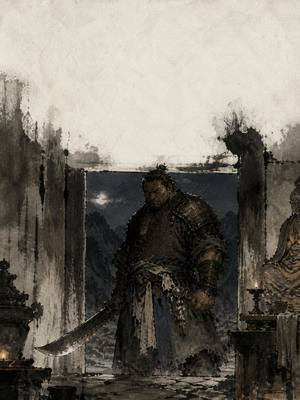
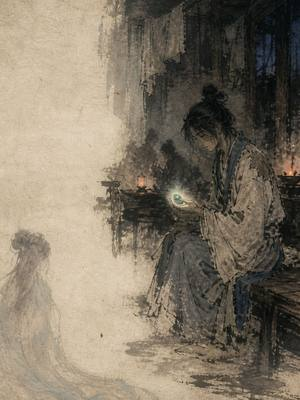

Tiếng nền cho từng cảnh. Chọn cảnh, copy prompt, tạo tiếng bằng công cụ anh
thích, rồi tải lên đây — game tự dùng bản của anh.
64 cảnh, mỗi cảnh một file riêng. Mỗi ảnh trong game là một cảnh, có tiếng
riêng, prompt riêng và đoạn truyện riêng để anh đọc trước khi làm. Cảnh nào chưa có
file thì im — không lấy tiếng của cảnh khác, không chèn nhạc tổng hợp.
Mở 📖 Cốt truyện cảnh này để đọc đúng đoạn truyện của cảnh — biết
ai đang ở đó, chuyện gì đang xảy ra, tiếng gì phải nghe được.
Nhìn ảnh bên cạnh để chắc đúng ngữ cảnh anh cần.
Copy prompt và dán vào công cụ tạo âm thanh của anh.
Tải file về máy. Dài bao nhiêu cũng được — 2 phút, 5 phút, không sao.
Quay lại đây, chọn file dưới đúng cảnh, bấm 📤 Gửi tiếng này.
Bot tự cắt theo độ dài ghi trên cảnh, chuyển mp3, cân âm lượng, rồi ghép vào game.
Gửi được cả video. Chọn video (mp4, mov, webm…) là trình duyệt tự trích
tiếng, nén thành mp3 ngay trên máy anh rồi chỉ gửi đoạn mp3 đó —
video không được tải lên, nên không nằm trong repo. Video dưới 5 MB;
lớn hơn thì giải mã trên điện thoại rất chậm, cắt bớt trước. Video không có tiếng
thì báo lỗi ngay, không gửi file rỗng.
Về độ dài: mỗi cảnh ghi rõ
dài bao nhiêu giây ngay dưới tên cảnh — cảnh bối cảnh 10 giây, cảnh có thoại
3–6 giây, có cảnh chỉ 2 giây. Anh gửi file dài bao nhiêu cũng được, hệ thống tự lấy
đoạn đầu dài đúng bằng số đó. Tiếng không lặp lại — phát một lần rồi thôi.
Định dạng nhận: mp3, wav, m4a, ogg,
flac, hoặc video mp4/mov/webm.
Gửi thẳng được tới 24 MB; lớn hơn thì nén bớt trước. Sau khi
gửi, bot tự cắt theo độ dài của cảnh, chuyển về mp3 96 kbps và cân âm lượng về −18 LUFS.
🔑 Kết nối GitHub (làm 1 lần) — cần để trang
tự đưa tiếng lên thay anh. Dán token vào đây; token chỉ lưu trong trình duyệt này
(localStorage), không gửi đi đâu ngoài GitHub.
1Chợ sớm Thất Huyền trấncho_01✅ đã cóbc_cho_01.jpg — bấm để xem to
Chợ lúc sạp còn đang dựng: gỗ kéo trên đất, sọt và hũ đặt xuống, bước chân thưa, bàn tán rất khẽ. Chưa đông, chưa có tiếng rao.
lưu làassets/am/cho_01.mp3
dài10 giây
📖 Cốt truyện cảnh này1394 ký tự
Chợ sớm Thất Huyền trấn
Ta mở mắt giữa một góc chợ, lưng tựa vào bức tường lạnh, trước mặt là mấy chiếc sọt rách. Mùi thuốc bắc, mùi cá khô, mùi người chen chúc xộc vào mũi. Tiếng mặc cả ồn ào, tiếng ngựa hí, tiếng trẻ con khóc vang lên chát chúa.
Đây… là đâu? Ta cố nhớ, nhưng ký ức hỗn độn như nước đục — chỉ còn một hình ảnh mờ của màn hình máy tính và tiếng còi xe ngoài cửa sổ.
“Tránh ra! Tránh ra!” — một gã phu khuân vác quát, suýt giẫm lên chân ta.
Ta lồm cồm bò dậy. Hai bàn tay ta chai sạn, móng đen kịt, quần áo vá chằng vá đụp. Thân thể này không phải của ta. Ký ức của nó ùa về từng mảnh: một kẻ ăn mày vô danh, không cha mẹ, không tông môn, sống nhờ lòng thương hại của người qua đường ở Thất Huyền trấn.
Rồi trước mắt ta, một dòng chữ mờ ảo hiện ra lơ lửng giữa không trung — như khắc bằng ánh sáng xanh lam, chỉ mình ta nhìn thấy:
👁️🗨️ 【 Hệ Thống · Nghịch Chuyển Càn Khôn 】 đã kích hoạt.
Một giọng nói vô cảm vang lên trong đầu ta, đều đều như máy móc: “Ngươi đã xuyên qua. Từ nay, ta là hệ thống của ngươi.”
Ta nghiến răng, đè nén cơn choáng. Ta xuyên không rồi. Vào thân xác kẻ thấp nhất trong cái trấn này. Ta đưa tay chạm vào dòng chữ — ngón tay xuyên thẳng qua. Nó chỉ tồn tại trong đầu ta.
Ta đếm những gì mình có: vài đồng bạc lẻ trong túi rách, một mạng người chưa biết dùng thế nào, và một thứ vừa cất lên trong đầu ta — thứ mà ta chỉ từng thấy trong mấy trò chơi ở thế giới cũ.
10-second dense, lively early-morning ambience in a crowded corner of a small town market. Cart wheels creak over packed earth, clay jars knock together, coins drop into a palm, cloth brushes past the ear. A rough male porter's voice, around thirty-five, hoarse and impatient, barks close by in Mandarin: 「让开！让开！」 Then a flat machine-even voice inside the head, in Mandarin: 「你已穿越。从今往后，我就是你的系统。」 Warm, human, close-recorded market field recording.
447/450 ký tự
Có 2 câu thoại tiếng Hoa trong ngoặc 「」, kèm tuổi và chất giọng để máy không tự đoán.
✅ Đã có tiếng riêng cho cảnh này.
2Ngõ nhỏ sau chợ — lời đồncho_02✅ đã cóbc_cho_02.jpg — bấm để xem to
Ngõ hẹp sau chợ: tiếng vọng sát vách, bước chân gần, giọng nói nhỏ ngay sau bức tường, đồ đạc khua trong sân. Chen chúc, kín, không thoáng.
lưu làassets/am/cho_02.mp3
dài10 giây
📖 Cốt truyện cảnh này890 ký tự
Ngõ nhỏ sau chợ — lời đồn
Ta lê bước vào ngõ nhỏ sau chợ, nơi đám ăn mày tụ tập quanh đống lửa nhỏ. Bụng ta đói cồn cào, nhưng cái đói chưa bằng nỗi sợ đang lớn dần trong lòng.
“Mấy ngày nữa Dã Lang Bang đánh tới,” — một lão ăn mày què chân lẩm bẩm. “Ta nghe đám buôn nói vậy. Chúng dòm ngó Thất Huyền Môn mấy tháng rồi.”
“Đánh nhau thì ăn mày như ta chết trước,” — gã khác cười gằn. “Mà biết đâu, loạn lạc lại có đồ nhặt.”
Loạn lạc lại có đồ nhặt. Câu nói ấy khiến tim ta khẽ động. Nhưng ta còn yếu hơn cả ăn mày bình thường — không võ công, không ai chống lưng.
Rồi lão què hạ giọng, kể chuyện khác: “Nghe nói sau núi có cái miếu hoang. Trong đó có một cái hộp kiếm cũ. Ai chạm vào đều phát bệnh, có kẻ chết luôn. Mấy năm nay không ai dám lại gần.”
Miếu hoang… hộp kiếm. Ta nhíu mày. 👁️🗨️ 【Hệ thống】“Cơ duyên nằm nơi người khác tránh.”
Ta nuốt khan. Ba ngày. Ta có ba ngày trước khi trận chiến ập tới.
10-second hushed, secretive night ambience at the mouth of a narrow alley behind a market. Ten paces in, men sit around a small fire: wood crackles, a stick pokes the embers, spit hisses. A lame old beggar, a man around sixty, mutters low and hoarse in Mandarin: 「再过几天，野狼帮就要打过来了。」 Their voices reach the ear softened, coming back off the close walls. Intimate, walled-in night field recording.
393/450 ký tự
Có 1 câu thoại tiếng Hoa trong ngoặc 「」, kèm tuổi và chất giọng để máy không tự đoán.
✅ Đã có tiếng riêng cho cảnh này.
3Góc chợ — một ngày mòn mỏicho_03✅ đã cóbc_cho_03.jpg — bấm để xem to
Chợ lúc chiều muộn, đã thưa: người dọn hàng, thùng gỗ đậy lại, bước chân mệt, tiếng nói rời rạc. Không còn huyên náo, chỉ còn mệt.
lưu làassets/am/cho_03.mp3
dài10 giây
📖 Cốt truyện cảnh này561 ký tự
Góc chợ — một ngày mòn mỏi
Ta quyết định ở lại trấn, bám lấy những gì quen thuộc. Một ngày dài ta bò khắp các góc chợ, xin ăn, nhặt nhạnh từng thứ người ta bỏ đi.
Nhưng hôm ấy người ta bận rộn lo chuyện Dã Lang Bang, chẳng ai buồn bố thí. Ta chỉ kiếm được nửa ổ bánh mốc và một trận mắng.
Ở lại đây, ta chỉ chờ chết. Ta ngồi bệt xuống, nhìn bầu trời chiều ngả màu.
👁️🗨️ 【Hệ thống】“Cơ duyên không tự tới. Phải đi tìm.”
Ta siết nắm tay, nhớ tới lời lão què về cái miếu hoang sau núi. Miếu hoang. Hộp kiếm.
Trời sẩm tối, ta đứng dậy, lặng lẽ bước về phía con đường mòn dẫn lên núi.
10-second sparse, tired dusk ambience at the edge of a market that is emptying. Close at the ear, a broom sweeps packed earth and cloth shifts. Further off, a wooden stall is folded and stacked, crates dragged a short way. Behind and to the right, slow footsteps walk away, a cough, a long sigh. Dry wind moves loose paper over open ground, where distant sounds thin out and die. Weary, open-air field recording.
412/450 ký tự
✅ Đã có tiếng riêng cho cảnh này.
Trận chiến9 cảnh
4Dã Lang Bang tập kíchtran_lua✅ đã cóbc_tran_lua.jpg — bấm để xem to
Tập kích bất ngờ: hỗn loạn bùng lên, lửa cháy, tiếng hét không rõ chữ, đồ vật vỡ, chạy loạn. Chưa thành trận đánh — còn là hoảng loạn.
lưu làassets/am/tran_lua.mp3
dài10 giây
📖 Cốt truyện cảnh này670 ký tự
Dã Lang Bang tập kích
Đêm thứ tư, ta đang ngồi điều tức trong miếu thì tiếng tù và vang lên từ phía trấn. Ta mở bừng mắt.
Đến rồi.
Tiếp theo là tiếng hét, tiếng cháy, tiếng đao chạm đao. Từ trên núi, ta thấy lửa bùng lên ở phía Thất Huyền trấn, rồi lan về phía Thất Huyền Môn.
“Dã Lang Bang tới sớm hơn ta nghĩ,” — kiếm linh nói, giọng nghiêm lại — “Ngươi có hai thanh kiếm, nhưng ngươi chưa từng giết ai. Đêm nay sẽ khác.”
Ta đứng dậy, đeo cặp kiếm sau lưng. Trong người ta, kiếm khí chảy mạnh hơn. Lần này, ta không chạy trốn nữa.
Trước mặt ta, con đường rẽ làm hai: một hướng xuống trấn, nơi dân thường đang bị tàn sát; một hướng về phía Thất Huyền Môn, nơi trận đánh dữ dội nhất.
10-second distant, wide night ambience from a high mountain path above a burning town. Everything rising from the valley arrives thin and stretched: fire roaring, timber cracking, one far shout, a horn. Close at the ear, wind combs ridge grass. A man's voice, thirty, deep and grave, flat and icy, speaks close in Mandarin: 「野狼帮来得比我预想的早。」 Cold, open, cinematic mountain field recording.
386/450 ký tự
Có 1 câu thoại tiếng Hoa trong ngoặc 「」, kèm tuổi và chất giọng để máy không tự đoán.
✅ Đã có tiếng riêng cho cảnh này.
5Xuống trấn — cứu dântran_lua_2✅ đã có

bc_tran_lua_2.jpg — bấm để xem to
Chạy xuống trấn giữa lửa: cháy gần, gỗ nổ, người gọi nhau, bước chân dồn trên đá. Chen giữa đám đông đang tháo chạy.
lưu làassets/am/tran_lua_2.mp3
dài10 giây
📖 Cốt truyện cảnh này667 ký tự
Xuống trấn — cứu dân
Ta lao xuống núi, hai thanh kiếm tuốt khỏi vỏ. Trấn Thất Huyền đang chìm trong lửa. Dân thường chạy tán loạn, đám cướp Dã Lang Bang đuổi theo chém giết.
Một tên cướp túm tóc một đứa bé, giơ đao. Ta không kịp nghĩ — chân ta lao tới, trường kiếm đâm thẳng.
Lần đầu tiên trong đời, ta giết một người. Máu bắn lên mặt ta, nóng hổi. Ta… vừa giết.
Nhưng không kịp sợ — hai tên nữa đã ập tới. Ta vung trường kiếm đỡ đòn, tay trái đưa đoản kiếm đâm vào hông một tên.
Ta đẩy lùi bọn chúng, kéo đứa bé chạy về phía con hẻm. Đêm ấy, ta cứu được vài mạng người, và lần đầu nếm mùi hồng trần mà kiếm linh nói tới.
10-second chaotic, close night ambience inside a burning town street. Fire roars through a wooden house beside the ear, roof beams crack, a blade sweeps through air, steel rings on steel, boots hammer stone, breath comes hard. A man's voice, thirty, deep and clipped, cold, cuts in close in Mandarin: 「很好。双手配合，别停下。」 Immersive, hot, urgent field recording.
355/450 ký tự
Có 1 câu thoại tiếng Hoa trong ngoặc 「」, kèm tuổi và chất giọng để máy không tự đoán.
✅ Đã có tiếng riêng cho cảnh này.
6Thất Huyền Môn — cổng vỡtran_lua_3✅ đã cóbc_tran_lua_3.jpg — bấm để xem to
Cổng gỗ vỡ: tiếng gỗ lớn gãy, bản lề bật, đám đông tràn qua. Nặng, chát, có lực va đập thật.
lưu làassets/am/tran_lua_3.mp3
dài10 giây
📖 Cốt truyện cảnh này653 ký tự
Thất Huyền Môn — cổng vỡ
Ta chạy về phía Thất Huyền Môn. Cổng môn đã vỡ, đệ tử ngã la liệt. Ta thấy mấy kẻ mặc áo xanh đang chống trả, nhưng đông quá.
Một tên cướp xông tới. Ta nghiêng người né, trường kiếm chém chéo. Tên địch ngã xuống, mắt trợn tròn. Ta… vừa đánh ngã một kẻ luyện võ nhiều năm.
Ta vận kiếm khí, một luồng khí lạnh chảy khắp người. Tốc độ ta tăng lên, đường kiếm sắc hơn. Từng bước một, ta đẩy lùi bọn chúng.
“Đừng ham đánh,” — kiếm linh nhắc trong đầu — “Ngươi không đủ sức đánh lâu. Giữ mạng.”
Ta cắn răng, rút lui về phía sân trong. Trong đám người hỗn loạn, ta thoáng thấy một bóng dáng gầy gò lướt qua — nhanh như mèo, hướng thẳng vào hậu trận địch.
10-second frantic, enclosed night ambience at the shattered gate of a martial sect under assault. Close by, a heavy gate splinters, hinges tear, boots stamp broken planks, breath rasps. A man's voice, thirty, deep and icy and level, speaks in Mandarin: 「别贪战。你撑不了多久，保命要紧。」 Further back, bouncing off stone, many men move at once, grunts, a hoarse shout. Brutal, enclosed stone courtyard field recording.
402/450 ký tự
Có 1 câu thoại tiếng Hoa trong ngoặc 「」, kèm tuổi và chất giọng để máy không tự đoán.
✅ Đã có tiếng riêng cho cảnh này.
7Cổng đông — đối mặt địchcong_dong_doi_mat✅ đã cóbc_cong_dong_doi_mat.jpg — bấm để xem to
Đối mặt trước khi đánh: căng, gần như im, chỉ có gió, thở, và tiếng vải áo khẽ động. Chưa có tiếng thép — chính cái im mới là căng.
lưu làassets/am/cong_dong_doi_mat.mp3
dài10 giây
📖 Cốt truyện cảnh này434 ký tự
Cổng đông — đối mặt địch
Ta chạy ngược dòng người đang tháo chạy, thẳng tới cổng đông. Cổng đã vỡ, đệ tử ngã la liệt, máu thấm đẫm đá.
Một tên Dã Lang Bang xông tới, đao giơ cao. Ta dồn linh khí xuống chân, nghiêng người né. Nhưng quanh ta, còn ba bốn tên nữa đang áp tới, thế đao dày đặc.
Nếu ta dùng toàn lực, ta thắng nhanh — nhưng sẽ lộ tu vi. Nếu ta giấu, ta an toàn hơn, nhưng vất vả hơn.
Trong đầu, Tuyết Cơ nhắc: “Chọn đi. Nhưng nhớ luật của ta.”
10-second tense, near-silent ambience at a broken gate in the instant before blades meet. Close at the ear, slow breath and cloth shifting as weight settles. A few paces ahead, their breathing, a boot scuffing stone, a blade drawn an inch. A girl's voice, eighteen, sweet and sultry, breathy, teasing, a little flirtatious, speaks in the head in Mandarin: 「选吧。但记住我的规矩。」 Cold, coiled, intimate stone field recording.
415/450 ký tự
Có 1 câu thoại tiếng Hoa trong ngoặc 「」, kèm tuổi và chất giọng để máy không tự đoán.
✅ Đã có tiếng riêng cho cảnh này.
8Cổng đông — giấu thực lựccong_dong_giau✅ đã cóbc_cong_dong_giau.jpg — bấm để xem to
Giấu lực: tiếng đánh bị nén lại, hơi thở giữ, bước chân chậm và chắc. Không bùng nổ, nhưng nặng.
lưu làassets/am/cong_dong_giau.mp3
dài10 giây
📖 Cốt truyện cảnh này636 ký tự
Cổng đông — giấu thực lực
Ta nghiến răng, dồn linh khí xuống chân nhưng chỉ dùng vừa đủ để trông như thân pháp võ công. Không hào quang, không khí tức lạ — chỉ là một tên đệ tử võ lâm vụng về nhưng dai sức.
Ta nghiêng người né, vung đao chém chéo. Tên địch đầu tiên ngã xuống. Rồi hai tên nữa ập tới, ta đỡ đòn, lùi dần, từng bước một.
Vất vả, nhưng an toàn. Không ai trong đám đệ tử xung quanh kịp nhận ra điều gì khác thường nơi ta.
“Đúng rồi,” — Tuyết Cơ nhắc trong đầu — “Giấu cho kỹ. Sống qua đêm nay quan trọng hơn thắng.”
Ta cắn răng, rút lui từng bước về phía dãy nhà kho. Trận đánh vẫn tiếp diễn sau lưng, nhưng ta đã sống qua đợt tấn kích đầu tiên.
10-second controlled, suppressed ambience at a gate. Close in, fast shallow breathing, a blade turned aside, boots sliding backwards on stone, cloth snapping, a short grunt. A girl's voice, eighteen, sweet and sultry, breathy, teasing, a little flirtatious, speaks low in the head in Mandarin: 「这就对了。」 then 「藏好。活过今晚比赢更重要。」 Stone walls close on both sides, so small sounds come back doubled. Restrained, dry, enclosed stone field recording.
439/450 ký tự
Có 2 câu thoại tiếng Hoa trong ngoặc 「」, kèm tuổi và chất giọng để máy không tự đoán.
✅ Đã có tiếng riêng cho cảnh này.
9Cổng đông — dùng toàn lựccong_dong_toan_luc✅ đã cóbc_cong_dong_toan_luc.jpg — bấm để xem to
Toàn lực: va đập mạnh, gió bị xé, đất bật, hơi thở bung ra. To nhất trong nhóm cổng đông.
lưu làassets/am/cong_dong_toan_luc.mp3
dài10 giây
📖 Cốt truyện cảnh này566 ký tự
Cổng đông — dùng toàn lực
Ta quyết định không giấu nữa. Ta vận toàn lực ngọc cốt, một luồng khí ấm chảy khắp người. Tốc độ ta tăng vọt, đường đao sắc lẹm, mỗi nhát chém đều chuẩn xác đến lạ.
Ba tên địch gục xuống chỉ trong vài hơi thở. Đám đệ tử xung quanh sững người, có kẻ quay lại nhìn ta đầy nghi hoặc.
“Ngươi… dùng gì vậy?” — một sư huynh thì thào, mắt trợn tròn.
Ta vội thu khí, cúi mặt: “Thân pháp tổ truyền thôi.” Nhưng ta biết, ánh mắt nghi ngờ ấy đã bám theo ta.
“Nhanh thì nhanh,” — Tuyết Cơ nói, giọng không vui — “Nhưng ngươi vừa để lộ. Nhớ lấy: có kẻ đã bắt đầu để ý ngươi.”
10-second sudden, loud ambience at a gate. Close in, one heavy impact, air torn, gravel thrown, stone struck, breath bursting out. A young man's hushed voice, around twenty-five, startled, in Mandarin: 「你……用的是什么？」 Then a girl's voice, eighteen, sweet but cool and displeased, the teasing gone, in the head: 「快是快，可你露了。记住：有人开始注意你了。」 Punchy, physical, enclosed stone field recording.
380/450 ký tự
Có 2 câu thoại tiếng Hoa trong ngoặc 「」, kèm tuổi và chất giọng để máy không tự đoán.
✅ Đã có tiếng riêng cho cảnh này.
10Cổng đông — Thất Huyền quyềncong_dong_quyen✅ đã cóbc_cong_dong_quyen.jpg — bấm để xem to
Đánh tay gần: quyền chạm quyền, tay áo phần phật, bước xoay trên đá, hơi thở đều. Gần và khô, không có nhạc.
lưu làassets/am/cong_dong_quyen.mp3
dài10 giây
📖 Cốt truyện cảnh này551 ký tự
Cổng đông — Thất Huyền quyền
Ta hạ thấp trọng tâm, hai tay dựng thế — đúng bài *Thất Huyền quyền* ta khổ luyện những đêm qua. Tên địch vung đao bổ xuống, ta nghiêng người gạt đòn, rồi thuận thế phản kích một quyền vào ngực hắn.
Đòn đánh không hào nhoáng, nhưng chuẩn xác và tiết kiệm sức. Ta dùng chính võ công phàm nhân ấy để đỡ đòn, chỉ điểm thêm chút linh khí vào những lúc hiểm — không ai nhận ra.
Một tên, rồi hai tên ngã xuống. Ta rút lui, người không hề hấn gì nặng.
“Khá lắm,” — Tuyết Cơ nói — “Võ công phàm nhân của ngươi, dùng đúng chỗ, lại thành lá chắn tốt nhất.”
10-second dry, close bare-handed combat ambience at a gate. Right at the ear, a fist strikes a chest, a forearm blocks, sleeves snap, feet pivot and stamp stone, steady breathing through the nose. A girl's voice, eighteen, sweet and sultry, pleased, teasing, speaks in the head in Mandarin: 「不错。凡人的武功用对地方，就是最好的盾。」 Tight, dry, enclosed stone field recording.
357/450 ký tự
Có 1 câu thoại tiếng Hoa trong ngoặc 「」, kèm tuổi và chất giọng để máy không tự đoán.
✅ Đã có tiếng riêng cho cảnh này.
11Cổng đông — gọi tên Hùng Bácong_dong_hung_ba✅ đã cóbc_cong_dong_hung_ba.jpg — bấm để xem to
Một tiếng gọi vang lên giữa sân: mọi thứ khựng lại, chỉ còn tiếng vọng và gió. Có giọng người nhưng không rõ chữ.
lưu làassets/am/cong_dong_hung_ba.mp3
dài10 giây
📖 Cốt truyện cảnh này588 ký tự
Cổng đông — gọi tên Hùng Bá
Ta hít sâu, rồi quát lớn về phía đám địch: “Hùng Bá! Ngươi núp đâu? Để đàn em chết thay, còn ngươi trốn sau lưng chúng à?”
Đám địch khựng lại. Mấy tên đang xông tới bỗng chần chừ, quay đầu nhìn nhau. Cái tên ấy là uy danh của bang chủ — bị một tân đệ tử gọi thẳng ra giữa trận, chúng không ngờ.
Từ trong bóng tối phía xa, một giọng khàn vang lên: “Ai dám gọi tên ta?”
Chỉ một khoảnh khắc chần chừ ấy cũng đủ. Ta nắm lấy thời cơ, đánh ngã hai tên trước mặt rồi rút lui về phía nhà kho.
“Liều đấy,” — Tuyết Cơ nói — “Nhưng hay. Ngươi vừa khiến chúng biết trong môn có kẻ nhớ mặt chúng.”
10-second courtyard ambience built on one shout and its echo. Close at the ear, one breath held. A wordless shout goes out and comes back off the far wall, then everything stops. From deep in the dark, a hoarse heavy male voice, a man around forty-five, answers, far off, in Mandarin: 「谁敢直呼我的名字？」 A girl's voice, eighteen, sweet and amused, teasing, in Mandarin: 「胆子不小。不过好。」 Tense, wide, open stone courtyard field recording.
425/450 ký tự
Có 2 câu thoại tiếng Hoa trong ngoặc 「」, kèm tuổi và chất giọng để máy không tự đoán.
✅ Đã có tiếng riêng cho cảnh này.
12Hỏa trường — cứu ngườihoa_truong_cuu✅ đã cóbc_hoa_truong_cuu.jpg — bấm để xem to
Giữa đám cháy: lửa nổ lách tách, gỗ cháy sụp, khói, bước chân vội trên tro. Lửa là chính, người ở phía sau.
lưu làassets/am/hoa_truong_cuu.mp3
dài10 giây
📖 Cốt truyện cảnh này765 ký tự
Hỏa trường — cứu người
Ta chạy về phía tiếng kêu cứu. Ngọn lửa từ dãy nhà kho lan sang tân xá, khói đen cuồn cuộn, nóng đến bỏng da.
Trong khói, một đệ tử nhỏ tuổi bị cột gỗ đè lên chân, mặt mũi lem luốc. Nó khóc, gọi mãi một cái tên ta không nghe rõ.
Ta lao vào, hai tay bẩy thanh gỗ. Ngày trước, ta không đủ sức. Nhưng giờ, linh khí trong người ta chảy mạnh — thanh gỗ nặng bị ta hất văng.
Ta kéo thằng bé ra ngoài, áo cháy xém. “Sư huynh… cảm ơn…” — nó thều thào. Ta chưa từng được gọi là sư huynh.
“Đi! Ra chỗ trống!” — ta quát, đẩy nó về phía sân. Rồi ta quay lại, vì còn tiếng kêu khác trong khói.
Một tên Dã Lang Bang lao ra từ đám lửa. Ta né đòn, rồi dùng cán đao đánh vào gáy hắn. Hắn gục xuống.
“Đủ rồi,” — Tuyết Cơ nói — “Ngươi đã cứu được người. Giờ lo cho mạng mình.”
10-second urgent ambience inside a burning building. Fire close and filling the space: roaring, crackling, timber snapping, embers falling. At the ear, heavy effort breathing, wood levered and thrown aside. A boy's voice, around fourteen, thin and broken, gasps close in Mandarin: 「师兄……谢谢你……」 then a girl's voice, eighteen, sweet but firm, in the head: 「够了。你已经救到人了。现在顾自己的命。」 Thick, smoke-damped, claustrophobic field recording.
427/450 ký tự
Có 2 câu thoại tiếng Hoa trong ngoặc 「」, kèm tuổi và chất giọng để máy không tự đoán.
✅ Đã có tiếng riêng cho cảnh này.
Núi3 cảnh
13Đường mòn lên núi — chạng vạngduong_mon_nui✅ đã cóbc_duong_mon_nui.jpg — bấm để xem to
Đường mòn chạng vạng: gió qua đá và cỏ khô, bước chân trên sỏi, không gian rộng. Chưa tối hẳn, còn tiếng chim xa.
lưu làassets/am/duong_mon_nui.mp3
dài10 giây
📖 Cốt truyện cảnh này656 ký tự
Đường mòn lên núi — chạng vạng
Con đường mòn dẫn lên núi hẹp và dốc, hai bên là cỏ dại cao quá đầu. Trời nhá nhem, tiếng dế kêu rả rích, thỉnh thoảng có tiếng chim đêm vỗ cánh khiến ta giật mình.
Ta đi một mình. Không ai tiễn, không ai cản. Kẻ ăn mày như ta, chết trên núi cũng chẳng ai hay.
Càng lên cao, không khí càng lạnh. Trước mặt, một ngôi miếu nhỏ hiện ra trong sương — mái ngói vỡ, cột gỗ mục, cửa mở toang như cái miệng đen.
Trong miếu, ta thoáng thấy một vật gì đó phản chiếu ánh trăng — một cái hộp dài, phủ bụi dày.
Đó là nó. Tim ta đập nhanh. Nhưng chân ta lại khựng lại. Lời đồn về kẻ chạm vào rồi chết vẫn vang trong đầu.
👁️🗨️ 【Hệ thống】“Sợ, thì quay về. Chọn.”
10-second cold, open ambience on a narrow mountain trail at dusk. At the ear, boots on loose gravel, dry grass brushing legs, quiet breathing. Further out and wide, wind moves through tall grass and crickets start up. Far below, wind turns over in the valley. Open air, no reflection, each sound lands and dies. Cold, open, wide mountain field recording.
354/450 ký tự
✅ Đã có tiếng riêng cho cảnh này.
14Hậu sơn — khe núi đêmkhe_nui_dem✅ đã cóbc_khe_nui_dem.jpg — bấm để xem to
Khe núi ban đêm: gió dồn trong khe hẹp, vọng lại, côn trùng thưa, lạnh. Hẹp hơn đường mòn, có tiếng vọng.
lưu làassets/am/khe_nui_dem.mp3
dài10 giây
📖 Cốt truyện cảnh này966 ký tự
Hậu sơn — khe núi đêm, theo lời đồn
Đêm buông xuống, ta lẻn ra khỏi tân xá, theo con đường mòn vòng ra sau hậu sơn. Trăng lưỡi liềm treo thấp, đủ soi những phiến đá xám nằm rải rác ven đường.
Khe núi nằm khuất sau một vách đá, hẹp và sâu, quanh năm ẩm ướt. Ta đứng trên miệng khe, lắng nghe. Gió lùa qua khe đá nghe như tiếng ai đó thở dài.
Rồi ta thấy nó — một vệt sáng xanh mờ nhạt chớp lên từ đám rêu ướt nơi vách khe, chớp một cái rồi tắt. Ta nín thở, men theo vách đá tới chỗ ấy.
Đất chỗ đó tơi xốp lạ thường, như có bàn tay nào vừa xới lên rồi lấp vội. Ta quỳ xuống, bới từng lớp rêu. Đào tới gang tay thứ ba, đầu ngón ta chạm một vật lạnh buốt, nhẵn bóng không giống sỏi đá.
Trong hốc đất ấy có một khối ngọc, bên trong mờ mờ một dáng người. Ta còn chưa kịp định thần thì nó đã *ấm lên* trong lòng bàn tay, ấm như hơi thở của một người đang ngủ.
Không phải đồ phàm trần. Ta ngồi giữa khe núi tối om, hai tay ôm khối ngọc, nghe rõ tiếng tim mình đập.
👁️🗨️ 【Hệ thống】“Cơ duyên… đã tới.”
10-second cold, narrow ambience in a rock ravine at night. Close at the ear, a few drops fall into a pool, sparse insects, quiet breathing. The ravine makes the wind sigh, forced through the gap and coming back off wet stone on both sides. Far above, wind crosses the open ridge. Tight, echoing, enclosed rock field recording.
326/450 ký tự
✅ Đã có tiếng riêng cho cảnh này.
15Hậu sơn — chôn trả lạikhe_nui_chon✅ đã cóbc_khe_nui_chon.jpg — bấm để xem to
Đào đất ban đêm trong khe núi: xẻng lưỡi vào đất, sỏi rời, hơi thở nặng, gió khe núi phía sau. Việc nặng, làm lặng lẽ.
lưu làassets/am/khe_nui_chon.mp3
dài10 giây
📖 Cốt truyện cảnh này791 ký tự
Hậu sơn — chôn trả lại
Ta vội vàng lấp đất lại, tay run đến mức rêu văng cả ra ngoài. Không phải của ta. Không nên dính vào. Ta tự nhủ, rồi men theo vách đá trở về tân xá.
Đêm ấy, ta không sao ngủ được. Gió lùa qua khe cửa nghe như tiếng ai đó thở dài — đúng cái âm thanh ta đã nghe nơi miệng khe núi. Mỗi cơn gió qua, lòng ta lại nặng thêm một chút, như có sợi dây vô hình buộc ta vào chỗ ấy.
Ta trở mình, đếm từng nhịp thở. Chỉ là trùng hợp. Chỉ là tiếng gió. Nhưng tới khi trăng xuống thấp, ta đã đứng dậy, mở cửa, lẻn ra ngoài mà không nhớ mình quyết định từ lúc nào.
Con đường mòn ra hậu sơn đêm ấy sao mà ngắn. Khe núi vẫn hẹp, vẫn sâu, vẫn lạnh như nuốt chửng tiếng bước chân. Ta quỳ xuống chỗ vách đá, đào bới.
Khối ngọc vẫn nằm nguyên đó, ánh sáng mờ nhạt như đang đợi. Lần này, ta không chôn nữa.
10-second physical ambience of hurried digging in a mountain ravine at night. Close in, a shovel blade cuts wet soil, gravel slides, earth lands on a pile, heavy breathing with effort, the shovel scrapes rock. Further out, wind through the ravine gap and distant insects. Rock walls close in, so the digging comes back off both sides. Cold, physical, enclosed rock field recording.
381/450 ký tự
✅ Đã có tiếng riêng cho cảnh này.
Sân tập6 cảnh
16Sân tập Thất Huyền Môn — giữa ngàysan_tap_ngay✅ đã cóbc_san_tap_ngay.jpg — bấm để xem to
Sân tập giữa ngày, đông: nhiều người cùng luyện, chân trên đất nện, vải áo phần phật, tiếng đếm nhịp xa. Đều và có nhịp của buổi tập.
lưu làassets/am/san_tap_ngay.mp3
dài10 giây
📖 Cốt truyện cảnh này1323 ký tự
Sân tập Thất Huyền Môn — giữa ngày
Sân tập rộng lớn, đất nện phẳng lì, hai bên cắm cờ xanh lam của môn phái. Hàng trăm đệ tử đang múa côn, đánh quyền, tiếng thở dốc vang khắp sân. Không khí nóng hừng hực như lò rèn.
Toàn là phàm nhân luyện võ. Ta nhận ra điều đó ngay — không một ai tỏa ra linh khí. Ta biết thế gian này có tu tiên, bởi ta đã đọc về nó; nhưng Thất Huyền Môn chỉ là một môn phái võ lâm phàm tục, chốn giang hồ thuần túy, cách xa tiên đạo một trời.
Ở góc sân, một thanh niên gầy gò, áo vải thô, đang lặng lẽ luyện một bài quyền. Động tác của y không đẹp, nhưng mắt y sắc như dao, không hề rời khỏi mục tiêu. Ta chợt khựng lại — dáng người ấy, ánh mắt ấy, ta đã gặp trong từng trang truyện. Hàn Lập.
👁️🗨️ 【Hệ thống】“Đúng vậy. Kẻ sẽ đứng trên đỉnh của thế gian này.”
Hàn Lập. Ta siết chặt tay, cố giữ vẻ mặt bình thản. Kẻ mà ta từng đọc, từng biết trước từng bước đi — giờ đang đứng cách ta vài chục bước chân, lặng lẽ luyện quyền như bao kẻ vô danh khác.
“Nghe chưa? Dã Lang Bang sắp đánh tới,” — một đệ tử bên cạnh thì thào — “Chúng dòm ngó môn ta mấy tháng nay rồi. Nghe đâu nửa tháng nữa là chúng kéo tới.”
“Suỵt! Muốn chết à?” — kẻ khác bịt miệng hắn. “Để sư phụ nghe được, cả hai đứa bị phạt quỳ đấy.”
Nửa tháng. Ta nuốt khan. Nửa tháng để một kẻ hạng bét như ta tìm đường sống — hoặc là chết trong trận đại chiến đầu tiên.
10-second dense, hot midday ambience in a large training yard. At the ear, bare feet stamp packed earth and breath is forced out on each move. A few paces off, wooden staffs strike each other, a sharp whistle cuts across. Two young male disciples, both around twenty, mutter close; the first hushed and eager in Mandarin: 「听见没？野狼帮快打过来了。」 then a second, sharp and scared: 「嘘！想死啊？」 Rhythmic, busy, hot open-air field recording.
425/450 ký tự
Có 2 câu thoại tiếng Hoa trong ngoặc 「」, kèm tuổi và chất giọng để máy không tự đoán.
✅ Đã có tiếng riêng cho cảnh này.
17Sân tập — bị chèn épsan_tap_chen_ep✅ đã cóbc_san_tap_chen_ep.jpg — bấm để xem to
Bị vây giữa sân: tiếng cười khẽ, bàn tán chế giễu ở phía sau, bước chân vòng quanh. Không ai nói to, nhưng không thân thiện.
lưu làassets/am/san_tap_chen_ep.mp3
dài10 giây
📖 Cốt truyện cảnh này672 ký tự
Sân tập — bị chèn ép
Ta đứng vào hàng, bắt chước các sư huynh múa côn. Nhưng tay chân ta vụng về, côn gỗ đập vào đâu cũng trật, mấy lần suýt đánh trúng người bên cạnh.
“Nhìn kìa, tên tân đệ tử!” — một gã to con cười nhạo — “Đánh côn mà như búa đập ruồi. Môn ta năm nay tuyển được cái thứ gì vậy?”
Đám đệ tử xung quanh cười ồ lên. Mặt ta nóng ran.
Gã to con tiến tới, đẩy mạnh vai ta một cái. Ta loạng choạng ngã ngồi xuống đất, côn gỗ văng ra xa. “Nghe cho rõ,” — hắn cúi sát mặt ta — “Mấy ngày tới động thủ với Dã Lang Bang, ngươi cứ nấp sau lưng ta. Đừng có mà liều, chết rồi lại phiền.”
Hắn cười khẩy. Ta ngồi dưới đất, hai tay siết chặt. Máu nóng bốc lên mặt. Nuốt nhục, hay cãi lại?
10-second hostile, quiet ambience in a training yard as a ring of students closes in. Low laughter, a mocking hum, feet shuffling as they circle. A big young man's voice, loud and sneering, close in Mandarin: 「瞧啊，新来的！棍子打得跟拍苍蝇一样。」 Then low and threatening: 「过几天跟野狼帮动手，你就躲我后头。」 Tight, unpleasant, close-recorded yard ambience.
324/450 ký tự
Có 2 câu thoại tiếng Hoa trong ngoặc 「」, kèm tuổi và chất giọng để máy không tự đoán.
✅ Đã có tiếng riêng cho cảnh này.
18Sân tập — cãi lạisan_tap_cai_lai✅ đã cóbc_san_tap_cai_lai.jpg — bấm để xem to
Cãi lại: giọng bật lên giữa sân, rồi im phăng phắc, rồi xì xào. Có giọng người nhưng không rõ chữ.
lưu làassets/am/san_tap_cai_lai.mp3
dài10 giây
📖 Cốt truyện cảnh này778 ký tự
Sân tập — cãi lại
“Ta không núp sau lưng ai cả,” — ta nói, giọng run nhưng mắt không cúi.
Gã to con sững lại một thoáng, rồi mặt hắn đỏ bừng. “Láo!” — hắn vung tay tát ta một cái như trời giáng. Ta ngã dúi xuống, khóe miệng bật máu.
“Tân đệ tử mà dám cãi!” — hắn đá thêm một cái — “Để xem ngươi trụ được mấy ngày.”
Đám đông xung quanh im phăng phắc. Không ai đỡ ta, nhưng cũng không ai cười nữa. Trong mắt vài người, ta thoáng thấy một tia khác lạ — không phải thương hại, mà là chút gì đó giống sự nể.
Hắn bỏ đi. Ta gượng ngồi dậy, lau máu nơi khóe miệng. Đau. Nhưng ít ra, ta đã không cúi đầu.
Đêm ấy, ta lén ra sân sau luyện lại bài quyền nhập môn đã nhìn lén ban ngày. Đau thì đau, nhưng ta luyện tới khi trọn bài. Thất Huyền quyền. Lần đầu tiên, ta nắm được một thứ bằng chính mình.
10-second ambience of a training yard going silent after one slap. A big young man's voice, furious, close in Mandarin: 「放肆！」 Then a flat slap lands, and the whole yard goes completely quiet. After a beat, a low hum of reaction spreads through the crowd, sound only. Far off, the rest of the training has stopped too. Sharp, still, open-yard field recording.
358/450 ký tự
Có 1 câu thoại tiếng Hoa trong ngoặc 「」, kèm tuổi và chất giọng để máy không tự đoán.
✅ Đã có tiếng riêng cho cảnh này.
19Tân xá — luyện lén trong đêmsan_sau_luyen_dem✅ đã cóbc_san_sau_luyen_dem.jpg — bấm để xem to
Luyện lén ban đêm: rất ít tiếng, chân trần trên đất, hơi thở nén, vải khẽ động. Phải giữ im nên mọi thứ đều nhỏ.
lưu làassets/am/san_sau_luyen_dem.mp3
dài10 giây
📖 Cốt truyện cảnh này761 ký tự
Tân xá — luyện lén trong đêm
Ta cúi đầu, không đáp. Nhục thì nhục, nhưng cãi lại chỉ chuốc thêm đau. Ta lồm cồm bò dậy, nhặt cây côn gỗ, lặng lẽ bước ra khỏi sân.
Đêm ấy, khi cả tân xá đã ngủ, ta lén ra sân sau, chỗ khuất nhất, tập lại bài quyền mà ban ngày ta đã nhìn lén các sư huynh múa. Không ai chỉ, ta chỉ bắt chước — sai thì sửa, ngã thì đứng lên.
Một đêm, hai đêm, ba đêm. Tay chân ta rã rời, nhưng từng chiêu một dần vào nếp. Đến đêm thứ tư, ta bỗng nhận ra mình đã đánh trọn một bài mà không trật nhịp nào.
Thất Huyền quyền. Ta nhớ tên bài quyền ấy — bài nhập môn của Thất Huyền Môn. Với kẻ khác, nó chỉ là sơ đẳng. Với ta, nó là thứ đầu tiên ta thật sự nắm được bằng mồ hôi của mình.
Ta nắm chặt tay, cảm nhận sức lực đã khác trước. Ít ra, lần này ta không còn tay không.
10-second deliberately small ambience of solitary late-night practice in a back yard. Everything at the ear: bare feet on packed earth, cloth moving, breath held and released through the nose, a fist passing through air, a quiet landing after a step. Far off, insects and one dog. Open night air, no reflection, sound dying fast. Small, secretive, open-night field recording.
375/450 ký tự
✅ Đã có tiếng riêng cho cảnh này.
20Sân sau — đêm, dưới gốc cổ thụsan_sau_anh_sang✅ đã cóbc_san_sau_anh_sang.jpg — bấm để xem to
Dưới gốc cổ thụ ban đêm: lá trên cao xào xạc, thân cây khẽ kêu, côn trùng thưa, không gian tĩnh.
lưu làassets/am/san_sau_anh_sang.mp3
dài10 giây
📖 Cốt truyện cảnh này1034 ký tự
Sân sau — đêm, dưới gốc cổ thụ
Mấy đêm sau, ta luyện tới khi trăng lên đỉnh đầu. Sân sau vắng lặng, chỉ có tiếng dế và hơi sương lạnh.
Giữa lúc thu quyền, ta chợt thấy một vệt sáng mờ nhạt lóe lên dưới gốc cổ thụ già — chỗ rễ cây xù xì nổi lên khỏi mặt đất. Ánh sáng ấy không phải ánh trăng, cũng không phải đom đóm. Nó xanh lạnh, chớp một cái rồi tắt.
Cái gì vậy? Ta đứng lặng, tim đập nhanh. Trong môn, đêm nào cũng có kẻ canh gác — nếu bị bắt gặp lục lọi quanh gốc cây, ta chắc chắn bị đuổi.
Ta quỳ xuống, gạt lớp lá mục. Đất mềm, tơi như vừa được ai xới. Móng tay ta cào xuống vài tấc, chạm phải một vật lạnh buốt — cứng như đá mà trơn như ngọc.
Một khối ngọc cốt nằm sâu dưới rễ cây, ánh sáng mờ nhạt chớp lên rồi tắt. Thoáng một cái, ta thấy trong đó có bóng người — dáng nữ, tóc dài buông, nhưng mờ quá, không kịp nhìn rõ. Rồi khối ngọc *ấm lên* trong lòng bàn tay ta, nóng dần như có mạch máu riêng.
Thứ này… không phải phàm vật. Ta ngồi bệt xuống đất lạnh, ôm khối ngọc trong tay, trong lòng mừng sợ lẫn lộn.
👁️🗨️ 【Hệ thống】“Cơ duyên… đã tới.”
10-second still ambience under a huge old tree in a back yard at night. Close at the ear, quiet breathing and one insect very near. Overhead, leaves move in a light wind, a thick branch creaks slowly, leaves let go and land. Far off, crickets and a dog. The canopy deadens everything above. Damp, faintly uneasy, close-recorded night field recording.
350/450 ký tự
✅ Đã có tiếng riêng cho cảnh này.
21Sân sau — chôn trả lạisan_sau_chon_lai✅ đã cóbc_san_sau_chon_lai.jpg — bấm để xem to
Đào đất trong sân sau ban đêm: xẻng vào đất mềm, đất rơi, thở nặng, lá cây phía trên. Kín đáo, phải làm nhanh.
lưu làassets/am/san_sau_chon_lai.mp3
dài10 giây
📖 Cốt truyện cảnh này863 ký tự
Sân sau — chôn trả lại
Ta vội vàng lấp đất lại, tay run đến mức lá mục văng cả ra ngoài. Không phải của ta. Không nên dính vào. Ta tự nhủ, rồi lặng lẽ quay về tân xá.
Đêm ấy, ta nằm co ro trên phản gỗ, mắt nhắm mà lòng không yên. Vừa chợp được một chút, ta đã thấy vệt sáng xanh dưới gốc cổ thụ chớp lên như đang gọi tên ta. Rồi một giọng nữ rất khẽ, mềm như tơ, luồn vào giấc ngủ: “Ngươi… đã chạm vào ta rồi. Đừng bỏ ta lại.”
Ta choàng tỉnh. Áo ướt đẫm mồ hôi, tay vẫn còn run. Không thể nào. Nhưng tiếng gọi ấy vẫn vang vọng trong đầu, dai dẳng như mùi hương chưa tan.
Ta không sao ngủ lại được. Càng cố quên, chân ta càng như tự kéo về phía sân sau — nơi gốc cổ thụ già đứng im giữa bóng tối, chờ ta như thể nó chưa từng bị ai đào lên.
Ta quỳ xuống, đào lại chỗ cũ. Đất vẫn tơi như vừa được ai xới. Khối ngọc nằm đó, ánh sáng mờ nhạt như đang thở. Lần này, ta không chôn nữa.
10-second hurried ambience of digging in a back yard at night. Close in, a small shovel bites soft earth, soil pours out, roots snap, leaves pushed aside, breathing quickens. A girl's voice, eighteen, sweet and dreamy, coaxing and faint, drifts in close in Mandarin: 「你……已经碰过我了。别把我丢下。」 Soft earth swallows the digging. Muffled, secretive, close night field recording.
367/450 ký tự
Có 1 câu thoại tiếng Hoa trong ngoặc 「」, kèm tuổi và chất giọng để máy không tự đoán.
✅ Đã có tiếng riêng cho cảnh này.
Vườn thuốc5 cảnh
22Vườn thuốc phía sau mônvuon_thuoc_gap✅ đã cóbc_vuon_thuoc_gap.jpg — bấm để xem to
Vườn thuốc buổi sáng: lá cọ nhau trong gió nhẹ, ong gần, côn trùng thưa, một con chim từ trên tường đáp lại. Ấm, kín, không người.
lưu làassets/am/vuon_thuoc_gap.mp3
dài10 giây
📖 Cốt truyện cảnh này892 ký tự
Vườn thuốc phía sau môn
Vườn thuốc của Thất Huyền Môn nằm ở góc khuất sau núi, cách biệt hẳn sân tập ồn ào. Mùi cam thảo, mùi đương quy, mùi đất ẩm quyện vào nhau, dịu mũi đến lạ.
Ta men theo luống dược, vừa đi vừa nhìn. Không có linh thảo gì ở đây — chỉ toàn thuốc bắc phàm trần, thứ mà người thường dùng để trị thương cảm mạo. Đúng là chốn phàm nhân.
Rồi ta chợt dừng lại. Ở góc vườn, một ông lão áo xám đang ngồi bó thuốc, động tác chậm rãi mà chuẩn xác. Thấy ta, ông ngước lên — đôi mắt già nua nhưng sáng lạ thường.
“Tân đệ tử?” — ông hỏi, giọng khàn khàn. “Ta là Mạc Đại Phu, coi sóc vườn thuốc này.”
Mạc Đại Phu. 👁️🗨️ 【Hệ thống】“Sư phụ của Hàn Lập. Kẻ sẽ truyền cho hắn Trường Xuân Công.”
Ta cố giữ vẻ mặt bình thản, cúi chào. “Vãn bối bị thương nhẹ khi luyện võ, muốn xin ít thuốc.”
Mạc Đại Phu nhìn ta một lúc lâu, rồi khẽ gật đầu. “Thuốc thì có. Nhưng ta thấy ở ngươi… có thứ gì đó khác thường.”
10-second warm, secluded morning ambience in a walled herb garden. A gentle breeze rustles dense herbal leaves. A bee buzzes close by, sparse delicate insects behind it. Dry stems snap underfoot. An old man's voice, dry and unhurried, close in Mandarin: 「新来的弟子？」 then 「老夫莫大夫，照看这片药园。」 Warm, tranquil, intimate walled-garden field recording.
339/450 ký tự
Có 2 câu thoại tiếng Hoa trong ngoặc 「」, kèm tuổi và chất giọng để máy không tự đoán.
✅ Đã có tiếng riêng cho cảnh này.
23Vườn thuốc — hỏi thẳngvuon_thuoc_hoi✅ đã cóbc_vuon_thuoc_hoi.jpg — bấm để xem to
Hỏi thẳng trong vườn: hai giọng nói thấp, ngắt quãng, lá vẫn cọ phía sau. Không rõ chữ, nhưng nghe ra là đang gặng.
lưu làassets/am/vuon_thuoc_hoi.mp3
dài10 giây
📖 Cốt truyện cảnh này434 ký tự
Vườn thuốc — hỏi thẳng
Ta không kìm được. “Tiền bối thấy ở vãn bối… điều gì khác thường?”
Mạc Đại Phu ngừng tay bó thuốc. Ông nhìn ta một lúc lâu, ánh mắt già nua mà sâu như giếng cổ. “Ta làm y mấy chục năm,” — ông chậm rãi nói — “Người bị thương thì ta nhìn ra ngay. Nhưng ngươi… không giống kẻ bị thương.”
Ta nuốt khan, không dám hỏi thêm. Ông cũng không nói gì nữa, chỉ lặng lẽ bó tiếp nắm thuốc trong tay. Ta đành ngồi xuống bên cạnh, phụ ông nhặt lá.
10-second tense, quiet ambience in a walled herb garden, two people standing close and wordless. What carries is the shape of it: slow dry breathing close on the left, a younger breath held tight, a foot shifting. An old man's voice, quiet and steady, close in Mandarin: 「我行医几十年，受伤的人我一眼就看得出。可你……不像受伤的人。」 Warm, hushed, walled-in garden field recording.
351/450 ký tự
Có 1 câu thoại tiếng Hoa trong ngoặc 「」, kèm tuổi và chất giọng để máy không tự đoán.
✅ Đã có tiếng riêng cho cảnh này.
24Vườn thuốc — im lặngvuon_thuoc_im✅ đã cóbc_vuon_thuoc_im.jpg — bấm để xem to
Im lặng trong vườn: chỉ còn lá, gió, côn trùng rất xa. Không giọng người. Cái im này là cố ý, không phải file hỏng.
lưu làassets/am/vuon_thuoc_im.mp3
dài10 giây
📖 Cốt truyện cảnh này307 ký tự
Vườn thuốc — im lặng
Ta cúi đầu, không dám hỏi thêm. Ở chốn môn phái này, biết quá nhiều chưa chắc đã là chuyện tốt.
“Đa tạ tiền bối,” — ta nói, rồi đứng lặng chờ.
Mạc Đại Phu nhìn ta thêm một lát, rồi khẽ gật gù — như hài lòng vì ta không hỏi. Ông cúi xuống bó tiếp nắm thuốc. Ta lặng lẽ ngồi xuống bên cạnh, phụ ông nhặt lá.
10-second deliberate stillness in a walled herb garden. Close at the ear, a bundle of dried herbs is handled and quiet breathing. Then a boy's voice, sixteen, low and warm, pleasant, speaks quietly in Mandarin: 「多谢前辈。」 Leaves move in a light wind, insects, one bird far away, then long quiet stretches open between each small sound. The wall holds everything in, so the quiet has an edge. Warm, still, walled-in garden field recording.
435/450 ký tự
Có 1 câu thoại tiếng Hoa trong ngoặc 「」, kèm tuổi và chất giọng để máy không tự đoán.
✅ Đã có tiếng riêng cho cảnh này.
25Vườn thuốc — Mạc Đại Phu và khối ngọcvuon_thuoc_ngoc✅ đã cóbc_vuon_thuoc_ngoc.jpg — bấm để xem to
Trong vườn, có người đang cầm một vật nặng: đá hoặc ngọc đặt xuống gỗ, vải bọc mở ra, lá vẫn động phía sau. Trầm và kín.
lưu làassets/am/vuon_thuoc_ngoc.mp3
dài10 giây
📖 Cốt truyện cảnh này1107 ký tự
Vườn thuốc — Mạc Đại Phu và khối ngọc
Ta cùng Mạc Đại Phu ngồi bó thuốc. Ông lão nói chuyện rời rạc, khi thì về thời tiết, khi thì về mấy vị thuốc quý, nhưng ánh mắt thì cứ nhìn ta như muốn soi thấu điều gì.
“Ngươi tới đây tự nguyện à?” — ông hỏi. “Không ai dẫn tới sao?”
“Vãn bối tự tới dự tuyển,” — ta đáp. “Không có người thân.”
Mạc Đại Phu khẽ gật gù, không nói thêm. Ông đứng dậy, chỉ vào góc vườn: “Chỗ đó có mấy luống cỏ dại, ngươi nhổ giúp ta. Tay chân lanh lẹ chút.”
Ta cúi xuống nhổ cỏ. Móng tay ta cào vào lớp rêu ẩm, rồi bỗng chạm phải một vật cứng, nhẵn và lạnh — không giống đá cuội trong vườn chút nào. Ta giật mình rụt tay lại.
Dưới lớp rêu ấy là một khối ngọc, ánh sáng bên trong chớp lên một cái rồi tắt. Ta kịp thấy một bóng nữ mờ ảo, tóc dài, rồi nó tan đi như hơi nước. Ngay sau đó, khối ngọc *ấm lên* trong tay ta, ấm một cách lạ lùng giữa buổi sớm còn sương.
Ta vội liếc về phía Mạc Đại Phu. Ông lão vẫn cúi bó thuốc, tay thoăn thoắt, mặt không đổi sắc. Ông ấy không cảm nhận được… hay là giả vờ không cảm nhận?
Thứ này… không phải phàm vật. Ta vội lấp đất lại, che nó đi.
👁️🗨️ 【Hệ thống】“Cơ duyên… đã tới.”
10-second secretive ambience in a walled herb garden where a heavy object is handled. Close in, a jade object is set down on wood with a solid knock, cloth unwrapped, fingers brush stone. An old man's voice, casual but probing, close in Mandarin: 「你是自己来的？没人带你来？」 Near the ear, two low unhurried breaths. Warm, hushed, close-recorded garden ambience.
349/450 ký tự
Có 1 câu thoại tiếng Hoa trong ngoặc 「」, kèm tuổi và chất giọng để máy không tự đoán.
✅ Đã có tiếng riêng cho cảnh này.
26Vườn thuốc — chôn trả lạivuon_thuoc_dem✅ đã cóbc_vuon_thuoc_dem.jpg — bấm để xem to
Đào đất trong vườn thuốc ban đêm: đất mềm hơn sân sau, rễ cây đứt, lá bị gạt sang, thở nén. Làm lặng lẽ giữa luống thuốc.
lưu làassets/am/vuon_thuoc_dem.mp3
dài10 giây
📖 Cốt truyện cảnh này867 ký tự
Vườn thuốc — chôn trả lại
Ta vội vàng lấp đất lại, tay run đến mức rêu văng cả ra ngoài. Không phải của ta. Không nên dính vào. Ta tự nhủ như vậy, rồi cúi đầu bó thuốc tiếp cho xong, không dám nhìn về phía luống cỏ.
Mạc Đại Phu rời vườn khi trời sẩm tối. Ta cũng lặng lẽ trở về tân xá. Nhưng đêm ấy, mùi cam thảo và đương quy cứ vương mãi nơi mũi, trộn lẫn với một mùi lạ khác — mùi hoa đêm ngọt mà lạnh, thứ mùi ta ngửi thấy đúng lúc chạm vào khối ngọc.
Ta trằn trọc tới nửa đêm. Trong cơn mơ màng, ta thấy mình ngồi giữa vườn thuốc, tay bới đất, còn Mạc Đại Phu đứng sau lưng lặng nhìn — nhưng khi ta quay lại thì chẳng có ai.
Ta bật dậy, mồ hôi ướt trán. Ông ấy có biết không? Câu hỏi ấy day dứt hơn cả nỗi sợ. Rồi chân ta đã tự bước ra khỏi tân xá, về phía vườn thuốc.
Ta quỳ xuống luống cỏ, đào lên. Khối ngọc vẫn nằm đó, ánh sáng mờ nhạt như đang chờ. Lần này, ta không chôn nữa.
10-second careful night ambience of digging in a herb garden. Close at the ear, a small tool cuts soft soil, roots snap, earth pours out, breath held. Further out, leaves swept aside and insects in wet garden air. The wall keeps it close, and damp air deadens whatever tries to travel. Still, cool, patient, close-recorded night garden ambience.
345/450 ký tự
✅ Đã có tiếng riêng cho cảnh này.
Miếu4 cảnh
27Ngoài miếu — quan sátmieu_hoang✅ đã cóbc_mieu_hoang.jpg — bấm để xem to
Ngoài miếu hoang: gió lùa qua tường vỡ, côn trùng đêm, không gian trống. Đứng ngoài quan sát, chưa vào trong.
lưu làassets/am/mieu_hoang.mp3
dài10 giây
📖 Cốt truyện cảnh này540 ký tự
Ngoài miếu — quan sát
Ta đứng ngoài, nín thở quan sát. Dưới ánh trăng nhạt, ta thấy trên nền miếu có mấy bộ xương khô, áo quần mục nát — kẻ từng tới đây và không đi ra.
Bên cạnh chúng, ta thấy những vết cào trên vách gỗ, sâu hoắm, như ai đó tuyệt vọng cào trước khi chết.
Không phải ma quái. Ta nhíu mày. Là hộp kiếm này… từ chối kẻ chạm vào nó.
👁️🗨️ 【Hệ thống】“Kiếm có linh. Kẻ không xứng, chết. Kẻ xứng…”
Ta nhìn cái hộp dài phủ bụi, rồi nhìn đôi bàn tay chai sạn của mình. Ta có gì để mất đâu.
Ta hít sâu, bước qua đám xương khô, tiến tới cái hộp.
10-second vast, cold ambience outside a ruined shrine at night. Close at the ear, quiet breathing and grass moving at the feet. Ahead, inside the ruin, wind pushes through broken walls and gaps, whistling low then dropping away, loose roof tiles shift. Further off, crickets and a piece of wall crumbling. Broken walls break the wind into pieces. Cold, vast, ruined-stone field recording.
388/450 ký tự
✅ Đã có tiếng riêng cho cảnh này.
28Trong miếu — xác người còn ấmmieu_trong✅ đã cóbc_mieu_trong.jpg — bấm để xem to
Trong miếu đá: tiếng cửa mục kẽo kẹt rồi bước chân chậm, nặng tiến lại từ phía sau. Ngắn — chỉ đủ để nghe ra có kẻ đang tới.
lưu làassets/am/mieu_trong.mp3
dài2 giây
📖 Cốt truyện cảnh này575 ký tự
Trong miếu — xác người còn ấm
Ta bước qua ngưỡng cửa mục nát. Mùi ẩm mốc trộn lẫn một mùi khác — mùi máu tươi, tanh nồng, chưa kịp khô.
Trên nền miếu, bên cạnh đám xương khô cổ xưa, là một xác người MỚI. Áo vải thô, tay còn nắm chặt một con dao găm. Vết thương trên cổ hắn còn rỉ máu. Ta khẽ chạm vào cánh tay hắn — vẫn còn ấm.
Hắn chết chưa đầy nửa khắc. Ta nuốt khan, sống lưng lạnh toát. Không phải xương khô ngàn năm. Có kẻ vừa ở đây. Có kẻ đang ở đây.
👁️🗨️ 【Hệ thống】“Ngươi không phải kẻ duy nhất nghe đồn.”
Ngay lúc ấy, phía sau ta vang lên tiếng bước chân — chậm, nặng, không hề giấu diếm.
2-second scene inside a dry stone shrine at night. An old wooden door drags open with a creak of hinges, then two slow heavy footsteps land on gritted stone, the second closer than the first. Short dry stone reverb. Cold, close, enclosed stone ambience.
253/450 ký tự
✅ Đã có tiếng riêng cho cảnh này.
29Đoạt hộp — Đỗ Tam phản phệdoat_hop✅ đã cóbc_doat_hop.jpg — bấm để xem to
Giằng co trong miếu: chân trượt trên đá, va đập, một tiếng sụp xuống, rồi vọng trong phòng đá. Ngắn và dữ.
lưu làassets/am/doat_hop.mp3
dài10 giây
📖 Cốt truyện cảnh này1130 ký tự
Đoạt hộp — Đỗ Tam phản phệ
Ta xông thẳng tới. Đỗ Tam cười khẩy, vung đao.
Hắn nhanh hơn ta tưởng. Một đao chém trúng vai ta, rách toạc áo, máu phun ra. Cơn đau xé toạc khiến ta khuỵu gối. Ta lăn một vòng, chộp lấy cái hộp trước khi hắn kịp tới.
“Ngu xuẩn,” — hắn gầm lên, một tay túm lấy hộp, giật mạnh khỏi tay ta. “Để ta cho ngươi xem, kẻ có duyên trông ra sao.”
Hắn đặt bàn tay lên nắp hộp.
Rồi mọi thứ đổi thay trong một khoảnh khắc.
Ánh sáng trắng từ trong hộp bùng lên như một lưỡi kiếm, đâm thẳng vào mặt Đỗ Tam. Hắn gào lên — một tiếng gào không giống tiếng người. Máu trào ra từ mắt, mũi, tai, miệng hắn. Hắn buông đao, hai tay cào vào không khí, cào vào chính mặt mình, như thể có thứ gì đó đang xé nát hắn từ bên trong.
“Không… xứng…” — một giọng nói vang lên từ hai thanh kiếm, lạnh như băng vạn năm.
Đỗ Tam đổ gục xuống, co giật vài cái, rồi bất động. Máu hắn loang ra, trộn với máu của kẻ hắn giết khi nãy.
Ta ôm vai rỉ máu, thở dốc, nhìn cái xác. Hắn chết… không phải vì ta. Vì hắn không xứng.
👁️🗨️ 【Hệ thống】“Kiếm chọn người. Ngươi hiểu chưa?”
Ta gượng đứng dậy, máu vẫn nhỏ giọt xuống nền, bước tới bên cái hộp vẫn đóng nguyên.
10-second frantic ambience of a struggle for a box inside a stone shrine. Close in, boots slip on stone, bodies collide, cloth tears, one heavy impact, then weight drops to the floor. A heavy man's voice, around forty, hoarse and gloating, in Mandarin: 「蠢货。我让你看看，有缘人长什么样。」 Then a man's voice, thirty, deep and cold, from the blades: 「不……配……」 Hard, resonant, enclosed stone field recording.
389/450 ký tự
Có 2 câu thoại tiếng Hoa trong ngoặc 「」, kèm tuổi và chất giọng để máy không tự đoán.
✅ Đã có tiếng riêng cho cảnh này.
30Tu luyện kiếm đạo — đêm đầutu_khiem✅ đã cóbc_tu_khiem.jpg — bấm để xem to
Luyện kiếm trong miếu đêm: lưỡi kiếm xé không khí, kim loại khẽ rít, bước chân xoay trên đá, hơi thở đều. Sắc và lạnh.
lưu làassets/am/tu_khiem.mp3
dài10 giây
📖 Cốt truyện cảnh này797 ký tự
Tu luyện kiếm đạo — đêm đầu
Đêm ấy, trong miếu hoang, ta ngồi đối diện kiếm linh. Y không dạy ta múa kiếm như võ phu — y dạy ta cách đưa khí vào lưỡi kiếm.
“Hít vào,” — y nói — “Rồi đẩy khí xuống tay, xuống chuôi, xuống mũi kiếm. Kiếm là một phần thân thể ngươi.”
Ta làm theo. Lần đầu, lưỡi kiếm chỉ khẽ rung. Lần thứ mười, ta cảm nhận được một luồng ấm chảy vào kim loại lạnh.
“Kẻ khác phải mất ba năm mới cảm được kiếm khí,” — y nói — “Nhưng ngươi có ta, và ngươi có cặp kiếm linh. Nhanh hơn nhiều.”
Đúng như lời y, một luồng khí lạnh chảy qua kinh mạch ta, rồi tụ lại nơi đan điền. Thì ra tu luyện là thế này.
Ta nhắm mắt, dồn hết tâm trí. Mồ hôi ướt đẫm lưng áo, nhưng ta không dừng.
Khi trời sáng, ta mở mắt, và cảm nhận được một sức mạnh mới trong từng nhịp thở — thứ sức mạnh mà bao năm ăn mày ta chưa từng có.
10-second precise ambience of sword practice in a shrine at night. Close at the ear, a blade cuts air in a long clean arc, steel rings faintly, bare feet pivot on stone. A man's voice, thirty, deep and grave, flat and icy, instructing close in Mandarin: 「吸气。把气送到手，送到柄，送到剑尖。」 The room answers each swing with its own reverb. Cold, sharp, clean stone field recording.
365/450 ký tự
Có 1 câu thoại tiếng Hoa trong ngoặc 「」, kèm tuổi và chất giọng để máy không tự đoán.
✅ Đã có tiếng riêng cho cảnh này.
Đêm2 cảnh
31Tân xá — tu luyện đêm đầutan_xa_dem✅ đã cóbc_tan_xa_dem.jpg — bấm để xem to
Đêm trong tân xá: côn trùng ngoài cửa sổ, giường gỗ khẽ kêu, hơi thở đều, không gian chật. Yên nhưng không im.
lưu làassets/am/tan_xa_dem.mp3
dài10 giây
📖 Cốt truyện cảnh này1099 ký tự
Tân xá — tu luyện đêm đầu
Trời gần sáng, ta ngồi dậy. Khối ngọc cốt trong tay vẫn tối mờ — nhưng rồi nó khẽ ấm lên, và trong đầu ta vang lên giọng Tuyết Cơ, yếu ớt nhưng rõ ràng. Nàng đã tiêu hoá xong phần dương khí đầu tiên, vừa tỉnh dậy.
“Ngồi yên. Ta dạy ngươi hô hấp pháp của Hợp Hoan Tông.”
Ta làm theo lời nàng. Hít vào, giữ khí, rồi thở ra — không phải kiểu thở bình thường, mà là cách đưa linh khí từ đất trời vào từng thớ thịt.
“Kẻ khác phải mất ba năm mới cảm nhận được linh khí,” — nàng nói — “Nhưng ngươi có ngọc cốt. Linh khí sẽ tự tìm tới ngươi.”
Đúng như lời nàng, một luồng khí mát lạnh tràn vào người ta, chảy qua kinh mạch. Ta thấy rõ từng đường đi của nó, như thấy một dòng nước chảy trong bóng tối. Thì ra tu luyện là thế này.
Ta nhắm mắt, dồn hết tâm trí. Trong người ta, một luồng ấm nóng dần tụ lại dưới rốn, rồi xoay tròn. Mồ hôi ướt đẫm lưng áo, nhưng ta không dừng.
Khi trời sáng hẳn, ta mở mắt. Luồng khí trong người đã đọng lại thành một khối nhỏ nơi đan điền — mới chỉ là mầm mống, chưa đủ để phá ngưỡng. Một đêm vẫn chưa đủ.
10-second small, dry ambience of a cramped wooden dormitory at night, someone lying awake. Close at the ear, a bed frame creaks under small movement, cloth shifts, breathing stays slow. A girl's voice, eighteen, sweet and lazy, teasing, faint as if from far inside, in Mandarin: 「坐好。我教你合欢宗的呼吸法。」 Dry, hushed, intimate room field recording.
339/450 ký tự
Có 1 câu thoại tiếng Hoa trong ngoặc 「」, kèm tuổi và chất giọng để máy không tự đoán.
✅ Đã có tiếng riêng cho cảnh này.
32Đêm cuối — Dã Lang Bang tập kíchdem_tap_kich✅ đã cóbc_dem_tap_kich.jpg — bấm để xem to
Đêm bị tập kích: từ im lặng bùng thành hỗn loạn, lửa, hét xa, chạy. Nửa đầu là đêm, nửa sau là loạn.
lưu làassets/am/dem_tap_kich.mp3
dài10 giây
📖 Cốt truyện cảnh này782 ký tự
Đêm cuối — Dã Lang Bang tập kích
Đêm cuối cùng trước khi ta tưởng Dã Lang Bang sẽ tới, trời đang yên tĩnh thì tiếng tù và vang lên từ phía rừng.
Đến rồi.
Tiếp theo là tiếng hét, tiếng cháy, tiếng đao chạm đao. Cổng đông Thất Huyền Môn bùng lên ánh lửa. Qua khe cửa, ta thấy bóng người chạy tán loạn, đệ tử ngã xuống như rạ.
“Dã Lang Bang tới sớm hơn ta nghĩ,” — Tuyết Cơ nói, giọng nghiêm lại — “Ngươi mới tầng hai, đủ để sống, nhưng không đủ để thắng. Nhớ kỹ: giấu tu vi, chỉ dùng võ công phàm nhân trước mặt người khác.”
Ta đứng dậy, nắm chặt thanh đoản đao nhặt được. Trong người ta, luồng linh khí mới tu luyện chảy mạnh hơn. Lần này, ta không chạy trốn nữa.
Trước mặt ta, con đường rẽ làm hai: một hướng ra cổng đông, nơi trận đánh dữ dội nhất; một hướng về phía tiếng kêu cứu vang lên trong khói lửa.
10-second ambience that turns from quiet night into chaos. Inside a wooden dormitory, close at the ear, insects, a bed frame, quiet breathing. Then a horn cuts in from the forest and everything breaks at once: fire igniting, blades, running feet, a gate slamming. A girl's voice, eighteen, sweet but sharp with alarm, in Mandarin: 「野狼帮来得比我预想的早。」 Tense, cinematic night field recording.
385/450 ký tự
Có 1 câu thoại tiếng Hoa trong ngoặc 「」, kèm tuổi và chất giọng để máy không tự đoán.
✅ Đã có tiếng riêng cho cảnh này.
Làng10 cảnh
33Sau trận — giữa đống đổ náttan_hoang✅ đã cóbc_tan_hoang.jpg — bấm để xem to
Sau trận, giữa đống đổ nát: lửa còn âm ỉ, gỗ cháy khẽ nổ, gió qua tường sập, không còn ai. Trống và nặng.
lưu làassets/am/tan_hoang.mp3
dài10 giây
📖 Cốt truyện cảnh này651 ký tự
Sau trận — giữa đống đổ nát
Trận đánh tạm lắng khi trời gần sáng. Ta ngồi bệt xuống bậc đá, toàn thân đau nhức, áo quần rách bươm.
Thất Huyền trấn tan hoang. Khói còn vương trong gió, mùi máu tanh không tan. Người ta lặng lẽ khiêng xác đi.
Ta đã sống qua đêm nay. Nhưng trong lòng ta không có chút vui mừng nào. Ta chỉ thấy rõ hơn bao giờ hết: kẻ yếu không có chỗ đứng trong thế giới này.
“Ngươi làm tốt,” — kiếm linh nói, giọng hiếm khi dịu — “Nhưng đây mới chỉ là khởi đầu.”
Ta đứng dậy, phủi bụi trên áo. Trong đám người qua lại, một bóng dáng gầy gò lặng lẽ bước về phía hậu sơn. Dáng đi ấy không vội, cũng không chậm — như kẻ đã quen đường.
Kẻ đó… không tầm thường.
10-second heavy, empty ambience among ruins just before dawn after a battle. Fire still smoulders: low crackling, a beam settling, ash shifting. Wind crosses collapsed walls. Slow footsteps of men carrying something heavy, setting it down, one long breath let go. A man's voice, thirty, deep and grave, quiet and unusually gentle, in Mandarin: 「你做得不错。但这只是开始。」 Cold, exhausted, ruined open-air field recording.
409/450 ký tự
Có 1 câu thoại tiếng Hoa trong ngoặc 「」, kèm tuổi và chất giọng để máy không tự đoán.
✅ Đã có tiếng riêng cho cảnh này.
34Kết chương — bình minh Thất Huyền trấnbinh_minh✅ đã cóbc_binh_minh.jpg — bấm để xem to
Bình minh trên trấn: chim sớm, gà xa, gió nhẹ, rất ít người đã dậy. Nhẹ và sạch, sau những gì vừa xảy ra.
lưu làassets/am/binh_minh.mp3
dài10 giây
📖 Cốt truyện cảnh này927 ký tự
Kết chương — bình minh Thất Huyền trấn
Trời sáng. Ta bước khỏi hậu sơn, ánh bình minh đầu tiên rọi lên vai áo rách.
Sau lưng, cặp kiếm khẽ rung. “Ngươi đã sống qua đêm đầu tiên,” — kiếm linh nói, giọng yếu nhưng mang theo ý cười — “Và ngươi đã lên Luyện Khí tầng ba. Không tồi cho một kẻ ăn mày.”
Ta khẽ cười. Bốn ngày trước, ta còn là kẻ co ro trong góc chợ, chẳng ai nhớ mặt. Giờ đây, ta đã có thực lực để đứng vững, có một cơ duyên mà không ai có, và một bí mật mà không ai biết.
“Nhớ kỹ,” — kiếm linh dặn — “Kiếm này tu giữa hồng trần. Ngươi càng trải, càng mạnh. Và gã Hàn Lập kia… hắn sẽ là người quan trọng nhất trong đời ngươi.”
👁️🗨️ 【Hệ thống】— lần cuối — “Chương một, kết thúc. Hồng Trần Kiếm đã nhận chủ.”
Ta hít sâu, nhìn ánh bình minh sau núi. Thất Huyền trấn tan hoang nhưng chưa gục. Hàn Lập đã bắt đầu con đường của hắn. Còn ta — ta đã có cặp kiếm, có kiếm linh, và một cơ duyên mà kẻ khác cả đời không gặp.
Con đường phía trước… ta tự chọn.
10-second clean dawn ambience over a small town the morning after trouble. Close in, birds start up one at a time, a rooster far off, light wind moves dust and loose paper. A man's voice, thirty, deep and grave, tired but almost smiling, in Mandarin: 「你活过了第一夜。而且已经到炼气三层。」 Open morning air, each sound landing clean and stopping. Clean, calm, open-air dawn field recording.
372/450 ký tự
Có 1 câu thoại tiếng Hoa trong ngoặc 「」, kèm tuổi và chất giọng để máy không tự đoán.
✅ Đã có tiếng riêng cho cảnh này.
35Tân xá Thất Huyền Môn — sángtan_xa_sang✅ đã cóbc_tan_xa_sang.jpg — bấm để xem to
Tân xá buổi sáng: người dậy, cửa mở, nước đổ, bước chân ra sân, nói chuyện thường ngày. Đời thường, không có gì đặc biệt.
lưu làassets/am/tan_xa_sang.mp3
dài10 giây
📖 Cốt truyện cảnh này1700 ký tự
Tân xá Thất Huyền Môn — sáng
Ta choàng tỉnh trên một tấm phản gỗ cứng, toàn thân ê ẩm như vừa bị ai đánh. Mùi cỏ khô, mùi mồ hôi, mùi thuốc bắc thoang thoảng trong căn phòng chật hẹp. Ngoài kia, tiếng người hô hào luyện võ vang đều đều, lẫn tiếng côn gỗ đập vào nhau chan chát.
Đây… là đâu? Ta cố nhớ lại, nhưng ký ức hỗn độn như nước đục — chỉ còn một hình ảnh mờ nhòe của màn hình máy tính và tiếng còi xe ngoài cửa sổ.
“Tân đệ tử! Còn nằm đó à?”
Một gã đàn ông lực lưỡng đá tung cửa bước vào, tay cầm cây côn gỗ. Hắn mặc võ phục xanh, đai lưng thắt chặt, giọng oang oang. “Thất Huyền Môn không nuôi kẻ lười. Ra sân tập ngay! Trễ một khắc, ta đánh gãy chân ngươi đấy.”
Thất Huyền Môn. Ta chưa từng nghe tên ấy, vậy mà trong lòng đã dâng lên một nỗi sợ lạnh buốt — như thể thân thể này đã biết nơi đây là đâu.
Rồi trước mắt ta, một dòng chữ mờ ảo hiện ra lơ lửng giữa không trung — như khắc bằng ánh sáng xanh lam, chỉ mình ta nhìn thấy:
👁️🗨️ 【 Hệ Thống · Nghịch Chuyển Càn Khôn 】 đã kích hoạt.
Ta sững người. Hệ thống? — cái thứ ta từng thấy trong mấy trò chơi, mấy cuốn truyện ở thế giới cũ?
Một giọng nói vô cảm vang lên trong đầu ta, đều đều như máy móc: “Ngươi đã xuyên qua. Từ nay, ta là hệ thống của ngươi.”
Ta đưa tay chạm vào dòng chữ — ngón tay xuyên thẳng qua, không chạm được gì. Nó chỉ tồn tại trong đầu ta. Vậy là… ta thật sự đã rời khỏi thế giới cũ.
Thân thể này không phải của ta. Nhưng ta đang sống trong nó, bằng xương bằng thịt. Ký ức của thân thể này ùa về từng mảnh: ta là tân đệ tử vừa trúng tuyển của Thất Huyền Môn — một môn phái võ lâm danh tiếng — nhưng thân thủ hạng bét, chỉ hơn kẻ mới học võ chút đỉnh.
Ta nghiến răng ngồi dậy. Muốn sống, trước hết phải hiểu mình đang ở đâu.
10-second ordinary morning ambience in a martial sect dormitory. Close in, a wooden door bangs open, sandals on stone, water poured from a bucket, a bed frame creaks. A big man's voice, around thirty, loud and blustering, in Mandarin: 「新来的！还躺着？」 then 「七玄门不养懒人。马上去练武场！」 Unremarkable, easy, lived-in room field recording.
319/450 ký tự
Có 2 câu thoại tiếng Hoa trong ngoặc 「」, kèm tuổi và chất giọng để máy không tự đoán.
✅ Đã có tiếng riêng cho cảnh này.
36Quán nước đầu trấn — dò tinquan_nuoc✅ đã cóbc_quan_nuoc.jpg — bấm để xem to
Quán nước: chén đặt xuống, nước rót, nhiều giọng nói chồng lên, tiếng cười thưa. Không rõ chữ — chỉ là chỗ đông người.
lưu làassets/am/quan_nuoc.mp3
dài10 giây
📖 Cốt truyện cảnh này1212 ký tự
Quán nước đầu trấn — dò tin
Ta lân la tới quán nước đầu trấn, nơi khách giang hồ tụ tập. Chỉ cần mấy đồng bạc lẻ, ta được ngồi ở góc tối và nghe ngóng.
“Dã Lang Bang dạo này động tĩnh lạ lắm,” — một gã đàn ông râu quai nón hạ giọng. “Chúng kéo tới mấy trăm người, dòm ngó Thất Huyền Môn suốt mấy tháng rồi. Cầm đầu là Hùng Bá — tay đao nặng trịch, nổi tiếng tàn độc.”
Hùng Bá. Ta khắc cái tên ấy vào lòng. Biết tên đầu lĩnh, có khi tới lúc nguy cấp lại dùng được.
“Suỵt!” — kẻ bên cạnh huých tay hắn. “Nói bậy mất mạng như chơi.”
“Nghe nói trong môn có một gã đệ tử gầy gò, ít nói, mà mấy vị sư phụ để mắt lắm,” — gã râu quai nón nói tiếp. “Hình như tên là Hàn gì đó…”
Hàn Lập. Ta cúi mặt vào chén nước. Ngay cả kẻ ngoài môn cũng để ý tới hắn — trong khi ta thì chẳng ai nhớ mặt. Ta phải tự tìm đường cho mình.
“Mà này,” — gã râu quai nón hạ giọng, như nói với chính mình — “nghe đâu sau hậu sơn có cái khe núi lạ lắm. Đêm đêm có ánh sáng xanh chớp lên. Mấy kẻ tò mò tới đó rồi… chẳng ai kể lại được gì.”
Ánh sáng xanh. Ta khẽ nhíu mày. Giữa lúc môn ta sắp bị đánh tới nơi, một chuyện lạ như vậy… biết đâu lại là cơ hội của kẻ chẳng còn gì để mất.
Ta đứng dậy, tính tiền nước. Đêm nay, ta sẽ tới khe núi sau hậu sơn xem thử.
10-second warm, crowded ambience in a dark corner of a roadside tea house. Close at the ear, a clay cup is set on wood, tea poured, coins counted, a stool scraping. A bearded man's voice, around forty, dropped low and secretive, close in Mandarin: 「野狼帮最近动静很怪。」 Then sharp and scared: 「嘘！乱说会丢命的。」 Warm, crowded, close-recorded tea house ambience.
345/450 ký tự
Có 2 câu thoại tiếng Hoa trong ngoặc 「」, kèm tuổi và chất giọng để máy không tự đoán.
✅ Đã có tiếng riêng cho cảnh này.
37Tân xá — đêm, lần song tu đầu tiêntan_xa_song_tu✅ đã có

bc_tan_xa_song_tu.jpg — bấm để xem to
Đêm trong phòng: rất tĩnh, hơi thở, vải khẽ động, côn trùng xa. Kín và riêng tư, không có gì ồn.
lưu làassets/am/tan_xa_song_tu.mp3
dài10 giây
📖 Cốt truyện cảnh này2807 ký tự
Tân xá — đêm, lần song tu đầu tiên
Ta thổi tắt đèn dầu. Bóng tối trùm lấy căn phòng, chỉ còn khối ngọc cốt sáng mờ trên ngực ta — nhịp sáng ấy chậm rãi, đều đặn, như một trái tim thứ hai đang đập trong ngực ta.
Rồi ta cảm nhận được nàng. Không phải qua mắt — mà qua hơi ấm phủ lên da thịt ta, từng chút một, như sương đêm bò lên mặt hồ. Một dáng người mờ ảo, mềm hơn khói, đè nhẹ lên ta. Ta không thấy nàng, nhưng ta biết nàng ở đó — ở nơi hơi thở ta chạm vào một khoảng không ấm lạ thường.
Mùi hoa đêm nồng lên. Không còn thoang thoảng nữa — nó tràn ngập, quấn lấy cổ họng ta, ngọt đến mức ta thấy hơi choáng. Như có cả một khu vườn đang nở ra trong bóng tối này, chỉ mình ta và nàng nghe thấy.
“Đừng sợ,” — nàng thì thầm. Hơi thở ấy lướt qua vành tai ta, ấm và run — run thật, hay chỉ là ta tưởng tượng, ta không tài nào phân biệt. “Chỉ là mượn thôi.”
Bàn tay nàng chạm vào cổ ta. Chỉ một ngón, rất khẽ, chậm rãi trượt xuống. Mỗi nơi nàng chạm, da ta nóng lên rồi lạnh đi, như có một dòng nước chảy ngược — từ trong xương tủy chảy ra ngoài da. Ta muốn nói gì đó, nhưng cổ họng khô khốc. Cơ thể ta không còn nghe lời ta nữa. Nó nghe lời nàng.
Nàng áp sát hơn. Ta cảm nhận được cả một khoảng ấm phủ dọc theo thân mình, và mùi hoa đêm bỗng đậm đến nghẹn thở. Mười ngón tay nàng đan vào tay ta, siết nhẹ — như thể nàng cũng đang bấu víu vào điều gì đó, như thể nàng cũng đang sợ điều gì đó.
Rồi ta cảm nhận được nó — *sinh lực của ta đang bị rút đi*. Chậm, đều, từng chút một. Không đau. Chỉ là một cảm giác trống rỗng dần lan ra từ lồng ngực, như ai đó đang múc nước từ một cái giếng sâu, từng gàu một, và cái giếng ấy là chính ta.
“Một chút nữa thôi,” — nàng thì thầm, và lần này giọng nàng *run rõ hơn*. “Ngươi làm tốt lắm.”
Ta nhắm mắt. Nhịp tim ta chậm lại — rồi nhanh lên — rồi lại chậm, không theo một nhịp nào cả. Trong bóng tối, ta nghe thấy hơi thở của hai người, nhưng ta không còn phân biệt được đâu là của nàng, đâu là của ta. Ta chỉ còn là một cái giếng, và nàng đang uống. Ta chỉ còn là hơi ấm, và nàng đang lấy.
Rồi — đúng vào khoảnh khắc ta tưởng mình không chịu nổi thêm nữa — nàng khẽ nói, rất nhỏ, gần như không thành tiếng: “Cảm ơn ngươi.”
Và mọi thứ nhòe đi.
Ta không nhớ gì nữa. Không một hình ảnh, không một âm thanh — chỉ còn một *khoảng trắng trong ký ức, nơi lẽ ra phải có gì đó. Như một trang giấy bị xé đi, để lại mép răng cưa. Ta biết mình vừa đánh đổi thứ gì đó. Ta chỉ không biết chính xác* là thứ gì.
Khi ta mở mắt, trời đã gần sáng. Người ta mệt nhoài như vừa lội qua một con sông dài, nhưng tinh thần lại sảng khoái lạ thường. Trên ngực, khối ngọc cốt đã tối sầm. Trong ngọc, Tuyết Cơ đã ngủ, im lìm như đá.
Ta chạm vào ngực mình, chỗ khối ngọc, và bỗng thấy lạnh. Ta đã cho nàng thứ gì? Câu hỏi ấy không có câu trả lời — chỉ có một khoảng trắng, và một mùi hoa đêm còn vương nơi gối.
10-second extremely quiet, intimate ambience of lying still in a dark room at night. At the ear, slow breathing, a pulse, cloth shifting, and a faint hum that seems to come from inside the room. A girl's voice, eighteen, sweet and breathy, trembling, teasing, close to the ear in Mandarin: 「别怕。只是借一点。」 Private, close, still, intimate room field recording.
355/450 ký tự
Có 1 câu thoại tiếng Hoa trong ngoặc 「」, kèm tuổi và chất giọng để máy không tự đoán.
✅ Đã có tiếng riêng cho cảnh này.
38Tân xá — khổ tu, lần thất bạitan_xa_kho_tu✅ đã cóbc_tan_xa_kho_tu.jpg — bấm để xem to
Khổ tu thất bại: hơi thở mệt và gấp, rồi thở dài, im. Có cái nặng trong phòng, không phải tiếng động lớn.
lưu làassets/am/tan_xa_kho_tu.mp3
dài10 giây
📖 Cốt truyện cảnh này769 ký tự
Tân xá — khổ tu, lần thất bại
Đêm thứ hai, ta lại ngồi vào góc tối, dẫn khí theo lời Tuyết Cơ. Nhưng lần này, mọi thứ không suôn sẻ như đêm đầu.
Luồng khí vừa tụ được nơi đan điền thì bỗng tán loạn, chạy ngược khắp kinh mạch. Ta đau đến mức ôm ngực, mồ hôi lạnh túa ra, suýt ngã ngửa.
“Sai rồi,” — Tuyết Cơ nói, giọng nghiêm — “Ngươi vội. Dẫn khí là chuyện của mười năm, không phải một đêm.”
Ta nghiến răng, ngồi thẳng dậy, làm lại từ đầu. Lần này chậm hơn, từng chút một. Khí lại tán. Ta làm lại. Lại tán.
Đến khi trời gần sáng, ta mới gom được một luồng nhỏ nơi đan điền — ít ỏi hơn cả đêm đầu. Ta mệt lử, người đau như bị ai đánh, nhưng trong lòng lại lặng lẽ dâng lên một thứ gì đó.
Thì ra khổ tu là thế này. Không phải một đêm thần kỳ, mà là trăm lần thất bại rồi mới được một lần thành.
10-second raw, quiet ambience of sitting in the dark after failure. Close in, breathing too fast and too heavy, then a long shaky exhale, then silence. A hand pressed against a chest, cloth twisted. A girl's voice, eighteen, sweet but scolding, a teasing edge under it, in Mandarin: 「错了。你太急。引气是十年的事，不是一夜。」 Dry, bare, intimate room field recording.
347/450 ký tự
Có 1 câu thoại tiếng Hoa trong ngoặc 「」, kèm tuổi và chất giọng để máy không tự đoán.
✅ Đã có tiếng riêng cho cảnh này.
39Tân xá — suýt bị phát hiệntan_xa_suyt_lo✅ đã cóbc_tan_xa_suyt_lo.jpg — bấm để xem to
Suýt bị phát hiện: nín thở, bước chân người khác tới gần rồi đi qua, im lại. Căng, không có tiếng lớn.
lưu làassets/am/tan_xa_suyt_lo.mp3
dài10 giây
📖 Cốt truyện cảnh này931 ký tự
Tân xá — suýt bị phát hiện
Đêm thứ mười mấy, ta đang điều tức thì nghe tiếng bước chân ngoài hành lang. Ta giật mình mở mắt — một sư huynh đi kiểm tra tân xá ban đêm.
Ta vội giấu khối ngọc vào vạt áo. Nhưng linh khí trong người ta đang vận chuyển, không kịp thu lại. Chỉ một thoáng nữa thôi là hắn sẽ cảm nhận được luồng khí lạ.
Ngay lúc ấy, Tuyết Cơ bỗng lên tiếng, giọng gấp gáp: “Để ta lo.” Rồi một luồng lạnh buốt phủ lên người ta, dập tắt hết khí tức. Khối ngọc trong vạt áo tối sầm lại.
Sư huynh dừng trước cửa, nhìn vào, thấy ta nằm im như ngủ. Hắn gật gù rồi bỏ đi.
Khi tiếng chân xa dần, ta thở phào. “May quá…”
“Không may đâu,” — Tuyết Cơ nói, giọng đã yếu hẳn — “Ta vừa tiêu hết phần dương khí tích được. Ta phải ngủ một thời gian. Từ giờ tới khi ta tỉnh, ngọc cốt vô dụng. Đừng gọi ta — ta không nghe được đâu.”
Rồi nàng im bặt. Ta cầm khối ngọc lạnh ngắt trên tay, bỗng thấy trống trải lạ thường. Thì ra, cái giá của sức mạnh là như vậy.
10-second tight, tense ambience of held breath in a dark dormitory. Close in, breath held, then released very carefully. Outside the door on the wooden walkway, slow footsteps come closer, pause, then fade. A girl's voice, eighteen, sweet but urgent, then fading, in Mandarin: 「让我来。」 then 「不妙。我得睡一阵子。别叫我。」 Tight, hushed, intimate room field recording.
351/450 ký tự
Có 2 câu thoại tiếng Hoa trong ngoặc 「」, kèm tuổi và chất giọng để máy không tự đoán.
✅ Đã có tiếng riêng cho cảnh này.
40Tân xá — đột phá Luyện Khí tầng haitan_xa_dot_pha✅ đã cóbc_tan_xa_dot_pha.jpg — bấm để xem to
Đột phá: một luồng trầm dâng lên rồi lắng xuống, không khí rung nhẹ, rồi trở lại tĩnh. Không phải nhạc — là rung của không gian.
lưu làassets/am/tan_xa_dot_pha.mp3
dài10 giây
📖 Cốt truyện cảnh này1369 ký tự
Tân xá — đột phá Luyện Khí tầng hai
Nửa tháng trôi qua kể từ đêm đầu tiên ấy.
Ngày thì ta hòa mình vào đám đệ tử, tập côn, gánh nước, làm những việc phàm tục nhất để không ai để ý. Đêm đến, ta lén lút ngồi trong góc tân xá, dẫn khí theo lời Tuyết Cơ.
Có đêm, khí tán loạn, đau đến mức ta phải nghiến răng chịu đựng. Có đêm, ta suýt ngủ gục giữa chừng. Nhưng ngày nào cũng vậy, ta không bỏ.
Rồi một đêm, khi luồng khí trong đan điền đã dày đặc đến mức không thể đè nén thêm, ta đẩy mạnh một cái — và *ngưỡng cửa vỡ ra*.
“Ngươi lên tầng rồi,” — Tuyết Cơ nói, giọng vừa tỉnh ngủ, có chút ngạc nhiên — “Luyện Khí tầng hai. Nửa tháng. Nhanh hơn ta tưởng.”
Ta thở ra một hơi dài. Nửa tháng, so với kẻ khác phải mất nhiều năm, vẫn là quá nhanh. Nhưng ta đã tự mình trải qua từng đêm khổ tu, từng lần thất bại — không phải chuyện một sớm một chiều.
“Nhưng nghe cho kỹ,” — nàng nói, giọng nghiêm lại — “Đây là môn phái võ lâm. Không ai tu tiên ở đây cả. Nếu ngươi để lộ, ngươi sẽ chết — không phải vì Dã Lang Bang, mà vì chính đồng môn của ngươi.”
Ta biết. Ta khẽ gật đầu.
“Còn nữa,” — nàng nói thêm — “Mỗi lần ta song tu để khôi phục, ta phải ngủ một thời gian, ngọc cốt sẽ im lìm. Nhớ lấy. Đừng chủ quan mà dựa dẫm vào nó.”
Ta đưa tay chạm vào ngọc cốt, cảm nhận mạch đập yếu ớt bên trong. Tầng hai. Vẫn còn quá yếu so với Hùng Bá, so với Dã Lang Bang. Nhưng ít nhất… ta không còn là kẻ tay không.
10-second deep, sub-heavy ambience of a closed room under pressure. A low rumble rises out of silence, holds at its peak with a faint shimmer, then settles. Close at the ear, one held breath, then a slow release. A girl's voice, eighteen, sweet and delighted, teasing, in Mandarin: 「你上了一个台阶。炼气二层。半个月。比我预想的快。」 Deep, enclosed, low-frequency room ambience.
353/450 ký tự
Có 1 câu thoại tiếng Hoa trong ngoặc 「」, kèm tuổi và chất giọng để máy không tự đoán.
✅ Đã có tiếng riêng cho cảnh này.
41Sau trận — giữa đống đổ nátmon_phai_tan_hoang✅ đã cóbc_mon_phai_tan_hoang.jpg — bấm để xem to
Đống đổ nát của môn phái: tường sập, gỗ gãy còn rơi lả tả, gió lùa qua khoảng trống, không người. Rộng và trống hơn sân sau.
lưu làassets/am/mon_phai_tan_hoang.mp3
dài10 giây
📖 Cốt truyện cảnh này1320 ký tự
Sau trận — giữa đống đổ nát
Trận đánh tạm lắng khi trời gần sáng. Ta ngồi bệt xuống bậc đá, toàn thân đau nhức, áo quần rách bươm.
Thất Huyền Môn vẫn chưa gục, nhưng tổn thất nặng nề. Giữa đống đổ nát, người ta lặng lẽ khiêng xác đồng môn đi. Khói còn vương trong gió, mùi máu tanh không tan.
Ta đã sống qua đêm nay. Nhưng trong lòng ta không có chút vui mừng nào. Ta chỉ thấy rõ hơn bao giờ hết: kẻ yếu không có chỗ đứng trong thế giới này.
Mạc Đại Phu lặng lẽ đi qua đám đông, tay xách hòm thuốc, cứu chữa người bị thương. Khi ngang qua ta, ông dừng lại, nhìn ta một lúc lâu.
“Ngươi sống sót… là tốt,” — ông khẽ nói. Rồi ông mở hòm thuốc, lấy ra một gói giấy nhỏ, đưa cho ta. “Cầm lấy. Thuốc phòng thân — cần thì dùng.”
Ta đón lấy, hơi sững người. “Vãn bối… cảm tạ.”
Khi ta đưa tay đón, ánh mắt ông chợt dừng lại nơi vạt áo ta — nơi khối ngọc cốt nằm im. Rất nhanh, ông nhìn đi chỗ khác, nhưng ta kịp thấy. Ông khẽ nói, giọng chỉ đủ cho ta nghe: “Đêm nay ngươi không bị thương nặng… lạ thật.”
Nói xong, ông đứng dậy, bước tiếp vào đám đông, không nhìn ta thêm lần nào. Ta siết chặt gói thuốc trong tay, sống lưng lạnh buốt. Ông ấy biết. Ông ấy biết nhiều hơn ta tưởng.
Trong đám người qua lại, một bóng dáng gầy gò lặng lẽ bước về phía hậu sơn. Dáng đi ấy không vội, cũng không chậm — như kẻ đã quen đường.
Kẻ đó… không tầm thường.
10-second wide, empty ambience in the ruins of a martial sect just before dawn. Close at the ear, quiet breathing and ash shifting. Further out, wind through broken walls, loose roof tiles sliding. An old man's voice, around sixty, quiet and kind, close in Mandarin: 「你活下来……就好。」 then 「拿着。护身的药，需要就用。」 Cold, empty, wide ruined field recording.
341/450 ký tự
Có 2 câu thoại tiếng Hoa trong ngoặc 「」, kèm tuổi và chất giọng để máy không tự đoán.
✅ Đã có tiếng riêng cho cảnh này.
42Kết chương — bình minh Thất Huyền Mônbinh_minh_ngoc_cot✅ đã cóbc_binh_minh_ngoc_cot.jpg — bấm để xem to
Bình minh ở cổng môn: gió núi nhẹ, chim sớm, chuông rất xa, sân còn vắng. Sạch và cao, khác bình minh dưới trấn.
lưu làassets/am/binh_minh_ngoc_cot.mp3
dài10 giây
📖 Cốt truyện cảnh này1203 ký tự
Kết chương — bình minh Thất Huyền Môn
Trời hửng sáng. Ta rời khỏi góc hậu sơn, để ánh bình minh đầu tiên phủ lên tấm áo đã rách bươm.
Trong vạt áo, khối ngọc cốt khẽ ấm lên, như có ai vừa thức giấc. “Ngươi sống được qua đêm đầu tiên,” — Tuyết Cơ nói, giọng còn yếu ớt nhưng đã phảng phất ý cười — “Và ngươi đã lên Luyện Khí tầng hai. Với một kẻ tân đệ tử, vậy là không tồi.”
Ta bật cười khẽ. Nửa tháng trước, ta còn là kẻ bị xô ngã giữa sân tập mà không ai buồn nhớ mặt. Bây giờ, ta đã có chút thực lực để tự đứng vững, một cơ duyên không ai có, và một bí mật phải mang theo tới hết đời.
“Nhớ cho kỹ,” — Tuyết Cơ dặn, giọng nghiêm lại — “Ở chốn võ lâm này, thứ tu vi của ngươi là tội chết. Giấu cho sâu. Còn gã Hàn Lập kia… hắn sẽ là người quan trọng nhất trong đời ngươi.”
👁️🗨️ 【Hệ thống】— lần cuối, giọng đã bớt lạnh, thoáng chút hài lòng — “Chương một, khép lại. Ngọc cốt đã nhận chủ. Ngươi… bắt đầu giống một kẻ đáng để ta để mắt.”
Ta hít một hơi sâu, nhìn về phía núi sau. Thất Huyền Môn tan hoang nhưng chưa gục. Mạc Đại Phu vẫn lặng lẽ cứu người trong đống đổ nát. Hàn Lập đã bước lên con đường của hắn. Còn ta — ta có ngọc cốt, có Tuyết Cơ, và một cơ duyên mà kẻ khác cả đời cũng không gặp.
Con đường phía trước… ta tự chọn.
10-second high, clean dawn ambience at the mountain gate of a martial sect. Close at the ear, cloth flaps on a pole and breathing stays quiet. Far down the valley, a temple bell is struck once and rings away. A girl's voice, eighteen, sweet and lazy, almost fond, in Mandarin: 「你活过了第一夜。」 then 「在这武林里，你的修为是死罪。藏深一点。」 Clean, high, open mountain field recording.
358/450 ký tự
Có 2 câu thoại tiếng Hoa trong ngoặc 「」, kèm tuổi và chất giọng để máy không tự đoán.
✅ Đã có tiếng riêng cho cảnh này.
Tĩnh1 cảnh
43Đột phá Luyện Khídot_pha✅ đã cóbc_dot_pha.jpg — bấm để xem to
Yên ắng trong phòng kín: gỗ khẽ kêu, cửa sổ động rất nhẹ, không khí có trọng lượng. Không phải file hỏng — là phòng cố ý im.
lưu làassets/am/dot_pha.mp3
dài10 giây
📖 Cốt truyện cảnh này822 ký tự
Đột phá Luyện Khí
Ba ngày sau, ta đã không còn là kẻ ăn mày chỉ biết co ro. Kiếm linh dạy ta từng chút, nghiêm khắc như một sư phụ thực thụ.
“Ngươi lên tầng rồi,” — y nói, giọng có chút ngạc nhiên — “Nhanh hơn ta tưởng. Cặp kiếm này… đúng là chọn đúng người.”
Ta cảm nhận được kiếm khí chảy mạnh hơn trong kinh mạch. Sức mạnh tăng lên từng ngày — không nhiều, nhưng đủ để ta thấy mình đã khác trước.
“Nhưng nghe cho kỹ,” — y nói, giọng nghiêm lại — “Đây là phàm trần. Người thường không tu tiên. Nếu ngươi lộ kiếm khí trước mặt người khác, ngươi sẽ bị coi là yêu nhân mà giết.”
Ta biết. Ta khẽ gật đầu.
“Ba ngày nữa Dã Lang Bang tới,” — y nói thêm — “Ngươi chưa đủ mạnh để thắng, nhưng đủ để sống. Nhớ: cặp kiếm này là bí mật của ngươi.”
Đêm ấy, ta luyện tới tận khuya, cho tới khi cảnh giới Luyện Khí tầng ba vững vàng trong người.
10-second heavy silence in a closed room at night. Close at the ear, wood creaks as it cools, quiet breathing, a window shutter moves a fraction. A man's voice, thirty, deep and measured, in Mandarin: 「你上了台阶。」 then 「但听清楚：这是凡尘。别在人前露剑气。」 Deep, still, enclosed room ambience.
272/450 ký tự
Có 2 câu thoại tiếng Hoa trong ngoặc 「」, kèm tuổi và chất giọng để máy không tự đoán.
✅ Đã có tiếng riêng cho cảnh này.
Gặp gỡ — cảnh có lời thoại21 cảnh
44Đỗ Tam — kẻ tranh giànhdo_tam_mieu✅ đã có

nv_do_tam_mieu.jpg — bấm để xem to
Đỗ Tam chắn ngay cửa miếu: giọng đàn ông khàn, lớn, nói sát tai. Nền miếu đá vọng nhẹ, gió lùa qua cửa. Một câu thoại rồi im.
lưu làassets/am/do_tam_mieu.mp3
dài4 giây
📖 Cốt truyện cảnh này948 ký tự
Đỗ Tam — kẻ tranh giành
Một gã đàn ông đứng chắn ngay cửa miếu. Mặt hắn có một vết sẹo dài chéo qua mắt trái, thân hình vạm vỡ, tay phải cầm một thanh đao bản to đã sứt mẻ. Hắn nhìn ta, rồi nhìn cái hộp dài, khóe miệng nhếch lên.
“Lại thêm một con chuột,” — hắn nói, giọng khàn — “Ta nghe đồn về cái hộp này ba năm rồi. Ba năm! Ta đã giết hai kẻ tới trước. Ngươi là kẻ thứ ba.”
Hắn chỉ tay xuống xác người dưới nền. “Thấy chưa? Nó cũng tưởng mình có duyên. Có duyên với đao của ta thì có.”
Đỗ Tam. Ta nhớ ra rồi — lão què ở chợ từng nhắc: một tán tu khét tiếng quanh vùng, giết người cướp của, ai gặp cũng tránh. Hắn mạnh hơn ta gấp nhiều lần.
“Cút,” — hắn gằn giọng — “Hoặc chết tại chỗ.”
Nhưng mắt ta dán vào cái hộp. Ba ngày nữa Dã Lang Bang tới. Nếu ta bỏ đi bây giờ, ta vẫn là kẻ ăn mày chờ chết.
👁️🗨️ 【Hệ thống】“Kiếm đạo không sợ kẻ mạnh hơn. Chỉ sợ kẻ bỏ chạy.”
Ta không cúi đầu. Ta nhìn thẳng vào mắt hắn, chậm rãi nói: “Hộp này… không phải của ngươi.”
4-second scene inside a dry stone shrine at night. A heavy man's voice, around forty, rough and hoarse, pitched low, speaks close and unhurried with a threat resting under it, in Mandarin: 「又来一只老鼠。」 Behind him, faint wind moves through a broken doorway. Short, dry stone reverb. Dark, close, intimate field recording.
317/450 ký tự
Có 1 câu thoại tiếng Hoa trong ngoặc 「」, kèm tuổi và chất giọng để máy không tự đoán.
✅ Đã có tiếng riêng cho cảnh này.
45Trong miếu — chạm vào hộp kiếmkiem_hap✅ đã cóvt_kiem_hap.jpg — bấm để xem to
Nắp hộp gỗ bật mở, rồi một giọng nam lạnh, không rõ nguồn, vọng trong miếu đá. Không có tiếng nhạc, không có tiếng gió mạnh.
lưu làassets/am/kiem_hap.mp3
dài4 giây
📖 Cốt truyện cảnh này644 ký tự
Trong miếu — chạm vào hộp kiếm
Ta quỳ xuống trước cái hộp dài, phủi lớp bụi dày. Đó là một cái hộp gỗ đen, khắc những đường vân lạ, nặng hơn ta tưởng.
Ngón tay ta run run chạm vào nắp. Ngay khoảnh khắc ấy, một luồng lạnh buốt chạy dọc cánh tay, như có thứ gì đó đang dò xét ta từ bên trong.
Ta muốn rụt tay lại, nhưng không kịp — nắp hộp tự bật mở, ánh sáng trắng lóe lên, chói đến mức ta phải nhắm mắt.
Khi mở mắt ra, trước mặt ta là hai thanh kiếm nằm song song — một dài, một ngắn — lưỡi kiếm sáng như gương, không hề gỉ sét dù nằm trong miếu hoang bao năm.
Và rồi, một giọng nói vang lên — không phải trong đầu ta, mà từ chính hai thanh kiếm: “Ngươi… khác bọn chúng.”
4-second scene in a cold stone shrine. A wooden box lid snaps open, dry and sharp, then a man's voice, thirty, deep and grave, flat and icy, disembodied, speaks close to the ear in Mandarin: 「你……和他们不一样。」 Long stone reverb trails behind it. Cold, still, intimate field recording.
278/450 ký tự
Có 1 câu thoại tiếng Hoa trong ngoặc 「」, kèm tuổi và chất giọng để máy không tự đoán.
✅ Đã có tiếng riêng cho cảnh này.
46Kiếm linh hiện hìnhkiem_linh✅ đã cónv_kiem_linh.jpg — bấm để xem to
Kiếm linh hiện ra: giọng nam trẻ, lạnh và ngắn, nói sát. Nền miếu đá im, chỉ có tiếng vọng rất nhẹ của chính giọng nói.
lưu làassets/am/kiem_linh.mp3
dài5 giây
📖 Cốt truyện cảnh này802 ký tự
Kiếm linh hiện hình
Hai thanh kiếm khẽ rung lên, và từ giữa chúng, một bóng người mờ ảo hiện ra. Đó là một thanh niên áo trắng, mặt lạnh như băng, mắt sáng như kiếm quang. Y đứng đó, nhưng ta biết y không phải người sống.
“Ta là kiếm linh Hồng Trần,” — y nói, giọng lạnh và ngắn — “Kẻ giữ cặp kiếm này đã chết ngàn năm. Ta chờ người kế tiếp.”
Kiếm linh. Ta nuốt khan. Đây không phải thứ ta gặp mỗi ngày.
“Bao nhiêu kẻ đã tới đây,” — y nói tiếp, mắt quét qua đám xương khô — “Nhưng linh hồn chúng quá ô trọc. Kiếm không nhận.”
Y nhìn thẳng vào ta. “Còn ngươi… linh hồn ngươi không thuộc về thế giới này. Nó sạch, và nó lạ. Đó là lý do ngươi còn sống.”
Y nhận ra hồn ta khác thường. Ta siết chặt tay, không biết nên sợ hay nên mừng. Nhưng y chỉ biết hồn ta khác — y không biết ta từ đâu tới. Bí mật này, phải giữ.
5-second scene in a cold stone shrine, air completely still. A man's voice, thirty, deep and grave, flat and icy, quiet but clear, with a faint spectral edge, speaks close in Mandarin: 「我是红尘剑灵。」 Long cold stone reverb opens out behind the voice. Still, spectral, intimate field recording.
288/450 ký tự
Có 1 câu thoại tiếng Hoa trong ngoặc 「」, kèm tuổi và chất giọng để máy không tự đoán.
✅ Đã có tiếng riêng cho cảnh này.
47Kiếm linh — thử tháchkiem_linh_thu✅ đã cónv_kiem_linh_thu.jpg — bấm để xem to
Nhân vật chính cười gằn, giọng nam trẻ, cảnh giác. Nền miếu đá im lặng, xa có một tiếng kim loại rung rất khẽ.
lưu làassets/am/kiem_linh_thu.mp3
dài3 giây
📖 Cốt truyện cảnh này515 ký tự
Kiếm linh — thử thách
“Tin ngươi?” — ta cười gằn. “Ta mới xuyên tới đây, chưa gì đã tin một con ma trong miếu hoang?”
Kiếm linh không giận. Y chỉ đưa tay, và thanh kiếm ngắn khẽ bay lên, xoay một vòng rồi dừng lại trước mặt ta, mũi kiếm chúc xuống.
“Kiếm này,” — y nói — “Nếu ta muốn giết ngươi, ngươi đã chết từ lúc chạm vào hộp. Kiếm đã nhận ngươi — ta không thể đổi ý.”
Ta nhìn thanh kiếm lơ lửng, sống lưng lạnh toát. Y nói đúng. Nếu muốn hại, ta đã không còn đứng đây.
Ta thở dài, buông vai xuống. “Được. Nói đi. Ngươi muốn gì?”
3-second scene in a still stone shrine. A man's voice, thirty, deep and grave, flat and icy, speaks close to the ear in Mandarin: 「若我想杀你，你碰到盒子的那一刻就已经死了。」 Far off, metal rings once. Short stone reverb. Cold, final, intimate field recording.
239/450 ký tự
Có 1 câu thoại tiếng Hoa trong ngoặc 「」, kèm tuổi và chất giọng để máy không tự đoán.
✅ Đã có tiếng riêng cho cảnh này.
48Kiếm linh giới thiệu thân phậnkiem_linh_than✅ đã cónv_kiem_linh_than.jpg — bấm để xem to
Kiếm linh nói đều đều, giọng nam trẻ, không cảm xúc. Miếu đá vọng dài phía sau câu nói.
lưu làassets/am/kiem_linh_than.mp3
dài6 giây
📖 Cốt truyện cảnh này675 ký tự
Kiếm linh giới thiệu thân phận
“Ta là kiếm linh của Hồng Trần Kiếm,” — y bắt đầu, giọng đều đều — “Cặp kiếm này thuộc về một kiếm tu đã ngã xuống ngàn năm trước. Trước khi chết, y phong ấn kiếm vào hộp này, chờ người kế thừa.”
“Hồng Trần… là gì?” — ta hỏi.
“Hồng trần là bụi trần,” — y nói — “Cặp kiếm này hấp thu hồng trần — sinh tử, vui buồn, máu và nước mắt của chúng sinh. Kiếm càng trải, càng sắc. Kẻ cầm kiếm phải đi giữa hồng trần, chứ không ẩn tu nơi tiên cảnh.”
Ta nhíu mày. “Ta là ăn mày. Ta có gì đâu mà tu?”
“Ngươi có mạng,” — y đáp gọn — “Và ngươi có ta. Ta dạy ngươi kiếm đạo. Ngươi cho ta mượn thân xác để trở lại hồng trần. Một đổi một.”
👁️🗨️ 【Hệ thống】“Cơ duyên tới. Nắm, hay buông?”
6-second scene in a cold stone hall, dead quiet. A man's voice, thirty, deep and grave, even and emotionless, speaks close and clear in Mandarin: 「我是红尘剑的剑灵。」 Stone hall reverb stretches behind each phrase. Cold, hollow, intimate field recording.
245/450 ký tự
Có 1 câu thoại tiếng Hoa trong ngoặc 「」, kèm tuổi và chất giọng để máy không tự đoán.
✅ Đã có tiếng riêng cho cảnh này.
49Điều kiện nhận chủkiem_linh_dieu✅ đã cónv_kiem_linh_dieu.jpg — bấm để xem to
Nhân vật chính hỏi lại, giọng nam trẻ, dè dặt. Nền miếu im, không có gì chen vào câu nói.
lưu làassets/am/kiem_linh_dieu.mp3
dài4 giây
📖 Cốt truyện cảnh này552 ký tự
Điều kiện nhận chủ
“Ta cần biết rõ,” — ta nói — “Ngươi đòi gì ở ta?”
“Ta đòi ngươi đi giữa hồng trần,” — y đáp — “Kiếm này không thể tu trong hang động. Ngươi càng lăn lộn, càng sống chết, kiếm càng mạnh. Ngược lại — ngươi nhát gan, ẩn mình, kiếm sẽ bỏ ngươi mà đi.”
“Nếu ta chết thì sao?”
“Thì ta lại ngủ, chờ kẻ khác.” — Y nhìn thẳng vào ta — “Nhưng ngươi sẽ không chết dễ vậy. Ta dạy ngươi cách sống.”
Ta cúi đầu nhìn đôi tay chai sạn. Kẻ ăn mày vô danh… hay một kiếm tu đi giữa hồng trần? Nếu từ chối, ta vẫn là kẻ chờ chết trong góc chợ.
Ta ngẩng lên. “Được.”
4-second scene in a still stone shrine. A man's voice, thirty, deep and grave, flat and icy, speaks close to the ear in Mandarin: 「我要你走在红尘之中。」 Very short stone reverb, nothing else in the room. Cold, quiet, intimate field recording.
232/450 ký tự
Có 1 câu thoại tiếng Hoa trong ngoặc 「」, kèm tuổi và chất giọng để máy không tự đoán.
✅ Đã có tiếng riêng cho cảnh này.
50Nhận chủkiem_hap_nhan⬜ chưa cóvt_kiem_hap_nhan.jpg — bấm để xem to
Nghi lễ xong: một tiếng kim loại rạch rất mảnh, rồi giọng nam trẻ nói ngắn, trầm. Sau đó im.
lưu làassets/am/kiem_hap_nhan.mp3
dài4 giây
📖 Cốt truyện cảnh này748 ký tự
Nhận chủ
Ta đưa tay ra. Kiếm linh không chạm vào ta — y chỉ khẽ nâng cằm, và thanh kiếm ngắn tự bay tới, lưỡi kiếm rạch một đường mảnh trên lòng bàn tay ta.
Máu nhỏ xuống hai thanh kiếm. Lưỡi kiếm sáng rực lên, rồi máu thấm vào, biến mất như bị nuốt chửng.
Một luồng khí lạnh chạy dọc cánh tay ta, rồi lan khắp người. Ta nghiến răng chịu đau, nhưng rồi cơn đau tan biến, thay bằng một cảm giác sắc bén lạ thường — như thể tay ta vừa có thêm một giác quan mới.
“Xong rồi,” — kiếm linh nói — “Từ giờ, hai thanh kiếm này là của ngươi. Một dài một ngắn — trường kiếm giết địch, đoản kiếm hộ mệnh. Học cách dùng cả hai cùng lúc.”
Ta siết chuôi kiếm. Ta có vũ khí. Nhưng ta còn quá yếu để dùng nó.
“Nghỉ đi,” — y nói — “Đêm nay, ta dạy ngươi bài đầu tiên.”
4-second scene in a cold stone shrine. A thin blade whispers across skin, one small sharp metallic sound, then a man's voice, thirty, deep and grave, satisfied and final, speaks close in Mandarin: 「成了。」 Quiet stone sits around it. Cold, final, intimate field recording.
269/450 ký tự
Có 1 câu thoại tiếng Hoa trong ngoặc 「」, kèm tuổi và chất giọng để máy không tự đoán.
⬜ Chưa có tiếng — cảnh này đang im. Gửi file ở dưới để thêm.
51Gặp Hàn Lập — hậu sơnhan_lap✅ đã cónv_han_lap.jpg — bấm để xem to
Hàn Lập đứng quay lưng, giọng trầm, đều, không cao không thấp. Nền: gió núi nhẹ, sỏi dưới chân, vải áo khẽ động.
lưu làassets/am/han_lap.mp3
dài4 giây
📖 Cốt truyện cảnh này789 ký tự
Gặp Hàn Lập — hậu sơn
Ta theo bóng người ấy tới một góc khuất sau hậu sơn. Hắn dừng lại, không quay đầu, giọng trầm: “Theo ta lâu vậy, không mệt sao?”
Ta khựng lại. Hắn biết từ đầu. Ta siết chặt cán kiếm sau lưng.
Hắn quay lại. Ánh mắt sắc như dao, lạnh như băng — nhưng ta thấy trong đó một tia mỏi mệt, thứ mỏi mệt của kẻ đã giấu quá nhiều bí mật.
👁️🗨️ 【Hệ thống】“Hàn Lập. Đệ tử Thất Huyền Môn. Cũng là kẻ sẽ đứng trên đỉnh của thế gian này.”
Hàn Lập. Ta khẽ siết tay áo, che đi vẻ kinh ngạc. Người trước mặt ta — kẻ gầy gò, ít nói — chính là nhân vật chính của thế giới này.
“Ngươi không phải kẻ tầm thường,” — hắn nói, giọng không cao không thấp. “Và ngươi cũng đang giấu thứ gì đó.”
Hắn nhận ra rồi. Ta nuốt nước bọt. Đây là cơ hội — hoặc là hiểm họa. Một lời nói sai, có thể đổi cả tương lai.
4-second scene on a quiet mountain path in late afternoon. A young man's voice, eighteen, low and cold, unhurried, speaks without turning around, close to the ear, in Mandarin: 「跟了我这么久，不累吗？」 Behind him, light wind moves ridge grass, gravel shifts underfoot. Cool, still, intimate mountain field recording.
305/450 ký tự
Có 1 câu thoại tiếng Hoa trong ngoặc 「」, kèm tuổi và chất giọng để máy không tự đoán.
✅ Đã có tiếng riêng cho cảnh này.
52Đối thoại với Hàn Lậphan_lap_2✅ đã cónv_han_lap_2.jpg — bấm để xem to
Hàn Lập nói chậm, giọng trầm, cân nhắc từng chữ. Nền: núi đêm rất tĩnh, xa có côn trùng.
lưu làassets/am/han_lap_2.mp3
dài5 giây
📖 Cốt truyện cảnh này723 ký tự
Đối thoại với Hàn Lập
Hàn Lập im lặng một lúc lâu, đủ để ta nghe rõ tiếng tim mình đập.
“Người ở đây chỉ nhìn thấy một kẻ lang thang nơi ta,” — cuối cùng hắn nói — “Còn ngươi… nhìn thấy gì khác.”
Hắn không hỏi thêm. Chỉ cúi xuống, lau vết máu trên ống tay áo, như thể câu chuyện đã kết thúc. Nhưng ta biết, hắn đã ghi nhớ ta.
“Đêm nay, ngươi cứu được mạng mình,” — hắn nói, không ngẩng lên — “Nhưng con đường phía trước còn dài. Đừng để bị cuốn vào chuyện không liên quan.”
Hắn đang nhắc ta. Trong lòng ta dâng lên một cảm giác lạ — vừa sợ, vừa kính phục. Người này, dù còn yếu, đã có thứ khí độ mà ta chưa từng thấy ở bất kỳ ai.
Ta đứng dậy, khẽ gật đầu. Sau lưng, cặp kiếm khẽ rung — như thể kiếm linh cũng đang nhìn theo bóng người ấy.
5-second scene on a still mountain night. A young man's voice, eighteen, low and cold, slow, weighing each phrase, speaks close in Mandarin: 「这里的人只看见一个流浪汉。」 Very quiet night air behind it, one distant insect. Cool, bare, intimate night field recording.
252/450 ký tự
Có 1 câu thoại tiếng Hoa trong ngoặc 「」, kèm tuổi và chất giọng để máy không tự đoán.
✅ Đã có tiếng riêng cho cảnh này.
53Tân xá — đêm, khối ngọc phát sángngoc_cot⬜ chưa cóvt_ngoc_cot.jpg — bấm để xem to
Đêm trong tân xá: chỉ có tiếng đèn dầu tí tách rất nhỏ, hơi thở, vải chiếu khẽ động. Khối ngọc phát sáng KHÔNG có âm thanh — im hoàn toàn.
lưu làassets/am/ngoc_cot.mp3
dài6 giây
📖 Cốt truyện cảnh này950 ký tự
Tân xá — đêm, khối ngọc phát sáng
Đêm buông xuống, tân xá chìm vào im lặng. Ta nằm trên phản gỗ, đợi cho mọi người ngủ hết, rồi mới lấy khối ngọc ra.
Dưới ánh đèn dầu leo lét, nó chợt sáng lên — không phải thứ ánh sáng phản chiếu, mà là ánh sáng từ bên trong. Khối ngọc ấm dần, như có mạch đập riêng.
Ngươi… là gì?
Rồi bóng người trong ngọc cốt hiện ra rõ hơn. Một dáng nữ, tóc dài buông xuống, thân hình như được khắc từ ánh trăng. Nàng không phải tàn hồn mờ ảo — mà là da thịt thật, sống động đến mức ta nghe được cả hơi thở.
Cùng lúc ấy, một mùi hương lạ len vào mũi ta — mùi hoa đêm, ngọt mà lạnh, như thứ hoa chỉ nở khi trăng lên. Ta chưa từng ngửi thấy mùi ấy ở đâu. Về sau ta mới biết: mỗi lần nàng hiện thân, mùi hoa đêm ấy lại theo nàng mà tới.
Ta sững người, tim đập đến nghẹn cổ. Cái này… không thể là thật.
👁️🗨️ 【Hệ thống】“Hợp Hoan Tông. Phân thân. Bị phong ấn ngàn năm.”
Một giọng nữ vang lên, mềm như tơ, nhưng lạnh như băng: “Ngươi… cuối cùng cũng tới rồi.”
6-second scene in a small wooden room at night, very still. Close at the ear, a tiny oil-lamp flame ticks, breathing stays slow, a straw mat shifts once. Then a girl's voice, eighteen, sweet as honey and just as teasing, close in Mandarin: 「你……终于来了。」 The glowing jade itself makes no sound at all. Warm, hushed, intimate room field recording.
342/450 ký tự
Có 1 câu thoại tiếng Hoa trong ngoặc 「」, kèm tuổi và chất giọng để máy không tự đoán.
⬜ Chưa có tiếng — cảnh này đang im. Gửi file ở dưới để thêm.
54Ngọc cốt — người trong ngọctuyet_co✅ đã cónv_tuyet_co.jpg — bấm để xem to
Nhân vật chính giật mình hỏi, giọng nam trẻ, hơi run. Nền: phòng gỗ đêm, đèn dầu tí tách.
lưu làassets/am/tuyet_co.mp3
dài5 giây
📖 Cốt truyện cảnh này1111 ký tự
Ngọc cốt — người trong ngọc
Ta lùi lại một bước, lưng chạm vào vách gỗ. “Ngươi… ngươi là ai? Sao lại ở trong khối ngọc này?”
Nàng không bước ra khỏi khối ngọc, chỉ nghiêng đầu nhìn ta. Đôi mắt nàng sáng như sao, nhưng sâu hun hút như vực thẳm.
“Ta hỏi ngươi trước — ngươi là ai?” — nàng nói, rồi khẽ nhíu mày, như đang lắng nghe thứ gì đó trong ta. “Lạ thật… Hồn phách ngươi không giống người ở đây. Nó sạch — sạch đến lạ. Như thể ngươi vừa mới sinh ra, mà cũng như thể… đã sống ở một nơi rất xa.”
Nàng cảm nhận được. Tim ta đập mạnh. Nhưng nàng chỉ biết hồn ta khác thường — nàng không biết ta từ đâu tới. Không được để nàng biết.
Ta cúi mặt, giấu ánh mắt. “Ta… không nhớ rõ. Từ lúc tỉnh dậy, ký ức ta hỗn độn như nước đục.”
Nàng im lặng một lúc lâu, rồi khẽ cười. Nụ cười ấy không ấm, mà như lưỡi dao cắt qua không khí. “Giấu cũng được. Ta không cần biết ngươi từ đâu. Ta chỉ cần biết ngươi có ích cho ta hay không.”
“Còn ngươi?” — ta siết chặt khối ngọc — “Ngươi là thứ gì?”
“Ta là Tuyết Cơ,” — nàng nói, giọng như rót mật — “Phân thân của một nữ tu Hợp Hoan Tông. Bị phong ấn trong khối ngọc này ngàn năm. Và ta… cần ngươi.”
5-second scene in a wooden room at night with the lamp lit. A girl's voice, eighteen, sweet and sultry, breathy, teasing, speaks close to the ear in Mandarin: 「我先问你——你是谁？」 Under it, a tiny lamp flame ticks. Warm, hushed, tense intimate field recording.
252/450 ký tự
Có 1 câu thoại tiếng Hoa trong ngoặc 「」, kèm tuổi và chất giọng để máy không tự đoán.
✅ Đã có tiếng riêng cho cảnh này.
55Ngọc cốt — cảnh giáctuyet_co_canh_giac✅ đã cónv_tuyet_co_canh_giac.jpg — bấm để xem to
Nhân vật chính cười gằn, giọng nam trẻ, gượng. Nền phòng đêm im, chỉ có hơi thở.
lưu làassets/am/tuyet_co_canh_giac.mp3
dài3 giây
📖 Cốt truyện cảnh này673 ký tự
Ngọc cốt — cảnh giác
“Cần ta?” — ta cười gằn, dù trong lòng lạnh toát. “Ta mới xuyên tới đây, chưa gì đã tin một thứ ở trong ngọc? Ngươi tưởng ta ngốc à?”
Tuyết Cơ không giận. Nàng chỉ đưa bàn tay lên, và khối ngọc trong tay ta nóng ran. Một luồng khí ấm chảy dọc cánh tay ta, rồi tới tận tim.
Ta giật mình nhìn xuống. Vết bầm tím trên vai — thứ mà gã to con gây ra lúc chiều — đang mờ dần, da thịt lành lại. Nàng… đang chữa cho ta?
“Nếu ta muốn hại ngươi,” — nàng nói, giọng nhẹ như không — “thì ngươi đã chết từ lúc chạm vào ngọc.”
Ta cứng họng. Nàng nói đúng. Nếu nàng là tà vật, ta đã không còn đứng đây.
3-second scene in a still night room. A girl's voice, eighteen, sweet and unhurried, teasing, speaks close in Mandarin: 「若我想害你，你碰到玉的那一刻就已经死了。」 Soft room tone and one unsteady breath behind. Quiet, cool, intimate room field recording.
233/450 ký tự
Có 1 câu thoại tiếng Hoa trong ngoặc 「」, kèm tuổi và chất giọng để máy không tự đoán.
✅ Đã có tiếng riêng cho cảnh này.
56Ngọc cốt — Tuyết Cơ giới thiệu thân phậntuyet_co_than_phan✅ đã cónv_tuyet_co_than_phan.jpg — bấm để xem to
Tuyết Cơ nói, giọng nữ mềm như tơ nhưng lạnh, chậm như kể chuyện cũ. Nền: phòng đêm rất tĩnh, đèn dầu khẽ.
lưu làassets/am/tuyet_co_than_phan.mp3
dài6 giây
📖 Cốt truyện cảnh này1367 ký tự
Ngọc cốt — Tuyết Cơ giới thiệu thân phận
“Ta là Tuyết Cơ,” — nàng bắt đầu, giọng như kể một câu chuyện đã cũ ngàn năm — “Nội môn đệ tử Hợp Hoan Tông, một trong những tông môn song tu nổi tiếng nhất Cửu Châu.”
“Song tu?” — ta nhíu mày.
Nàng khẽ cười, tiếng cười như chuông bạc. “Đừng vội nghĩ bậy. Song tu là đạo — cách hai người tu luyện cùng nhau, lấy dương bổ âm, lấy âm dưỡng dương. Và với ta, nó còn là cách duy nhất để hồi phục.”
“Ngàn năm trước,” — nàng nói tiếp, ánh mắt xa xăm — “ta bị kẻ thù ám toán, nguyên thần tan vỡ. Chỉ còn một phân thân bị nhốt trong khối ngọc cốt này. Muốn khôi phục, ta phải *song tu với ngươi* — hút dương khí của ngươi để vá lại nguyên thần. Không có cách nào khác.”
Ta nuốt khan. Song tu với một kẻ trong ngọc.
“Khế ước gì?” — ta hỏi, trong lòng vừa sợ vừa tò mò.
“Khế ước nô lệ,” — nàng nói, và lần đầu tiên trong mắt nàng lóe lên một tia sắc lạnh — “Ngươi làm chủ, ta làm tớ. Ngươi cho ta mượn dương khí để khôi phục, ta dạy ngươi tu luyện. Một đổi một.”
“Tu luyện?” — ta sửng sốt. “Nhưng… đây là môn phái võ lâm. Trong môn không ai tu tiên cả.”
“Đúng vậy,” — nàng nghiêng người tới gần, hơi thở thơm mùi hoa đêm phả vào mặt ta — “Cho nên đây sẽ là bí mật của riêng ngươi. Giống như gã đệ tử gầy gò kia lén học công pháp của Mạc Đại Phu vậy.”
Hàn Lập. Tim ta thắt lại. Nàng biết cả chuyện đó.
“Thế nào?” — nàng hỏi, giọng vẫn nhẹ như tơ. “Dám ký không?”
6-second scene in a quiet wooden room at night. A girl's voice, eighteen, sweet and breathy, slow and teasing, as if telling a secret, speaks close to the ear in Mandarin: 「我是雪姬。」 A lamp flame ticks faintly in still air. Warm, silk-smooth, faintly cold intimate field recording.
278/450 ký tự
Có 1 câu thoại tiếng Hoa trong ngoặc 「」, kèm tuổi và chất giọng để máy không tự đoán.
✅ Đã có tiếng riêng cho cảnh này.
57Ngọc cốt — điều kiện khế ướctuyet_co_dieu_kien✅ đã cónv_tuyet_co_dieu_kien.jpg — bấm để xem to
Nhân vật chính hỏi, giọng nam trẻ đã run. Nền phòng đêm im, không có gì chen vào.
lưu làassets/am/tuyet_co_dieu_kien.mp3
dài4 giây
📖 Cốt truyện cảnh này1033 ký tự
Ngọc cốt — điều kiện khế ước
“Ta cần biết rõ,” — ta nói, dù giọng đã run — “Ngươi sẽ đòi gì ở ta? Mạng? Hồn? Hay thứ gì tệ hơn?”
Tuyết Cơ nhìn ta, trong mắt có chút hứng thú. “Ngươi khác đám phàm nhân ngoài kia. Ít ra còn biết hỏi trước khi bán mạng.”
“Ta cần dương khí,” — nàng nói thẳng — “Mỗi lần song tu, ta hút một phần sinh cơ của ngươi để vá nguyên thần. Ngươi yếu thì ta lấy ít, ngươi mạnh thì ta lấy nhiều.”
“Rồi sau đó?”
“Sau đó ta phải *ngủ — ngủ để tiêu hoá dương khí. Trong lúc ta ngủ, ngọc cốt này im lìm, ngươi không dùng được nó*.” — Nàng nghiêng đầu — “Đó là luật. Không có ngoại lệ.”
Không dùng được ngọc cốt trong lúc nàng ngủ. Ta nhớ kỹ điều ấy. Trong trận chiến sắp tới, biết đâu đó lại là điều quyết định sống chết.
“Còn lại,” — nàng nói tiếp — “ta dạy ngươi tu luyện. Ngọc cốt là vật chứa, cũng là bảo vật. Ngươi dùng nó hấp thu linh khí nhanh gấp mấy lần người thường. Kẻ yếu như ngươi, muốn sống trong trận đại chiến sắp tới, đây là đường duy nhất.”
“Ký hay không?” — nàng hỏi. “Ta không ép. Nhưng cơ hội chỉ tới một lần.”
4-second scene in a silent night room. A girl's voice, eighteen, sweet and businesslike, teasing under it, speaks close in Mandarin: 「签，还是不签？」 Only quiet room tone and one breath behind it. Hushed, tense, intimate room field recording.
235/450 ký tự
Có 1 câu thoại tiếng Hoa trong ngoặc 「」, kèm tuổi và chất giọng để máy không tự đoán.
✅ Đã có tiếng riêng cho cảnh này.
58Ngọc cốt — khoảnh khắc do dựtuyet_co_do_du✅ đã có

nv_tuyet_co_do_du.jpg — bấm để xem to
Không có thoại. Chỉ im lặng do dự: hơi thở nín, đèn dầu tí tách, phòng gỗ khẽ kêu. Căng mà không có tiếng lớn.
lưu làassets/am/tuyet_co_do_du.mp3
dài5 giây
📖 Cốt truyện cảnh này774 ký tự
Ngọc cốt — khoảnh khắc do dự
Ta im lặng, nhìn khối ngọc trong lòng bàn tay. Ánh sáng bên trong nó nhấp nháy như nhịp thở.
Một phần dương khí. Nàng nói nhẹ như không. Nhưng ta hiểu: đó là một phần sinh mệnh của ta, lấy đi mỗi lần nàng hồi phục, không lấy lại được. Mỗi lần nàng mạnh lên, là một lần ta yếu đi.
Ta nhớ lại khuôn mặt mình trong gương nước đêm qua — gầy gò, xanh xao, mắt thâm quầng vì thiếu ngủ. Ta mới xuyên tới đây chưa đầy một ngày. Vậy mà đã phải đem mạng mình ra đặt cược.
Còn cách nào khác không?
Ta nghĩ tới gã to con ở sân tập. Nghĩ tới Dã Lang Bang đang kéo tới. Nghĩ tới cái chết đang chờ kẻ yếu trong trận đại chiến kia. Không. Không có cách nào khác.
Ta hít một hơi thật sâu, rồi chậm rãi ngẩng đầu lên. Kẻ yếu không có quyền lựa chọn. Nhưng kẻ dám đánh đổi — thì có.
5-second scene in a night room, a breath held. Close at the ear, breath stops and releases slowly, a tiny oil-lamp flame ticks, one dry wooden joint creaks. A girl's voice, eighteen, sweet and light, as if it hardly matters, speaks close in Mandarin: 「一部分阳气。」 Tense but nothing loud. Warm, hushed, suspended intimate room field recording.
338/450 ký tự
Có 1 câu thoại tiếng Hoa trong ngoặc 「」, kèm tuổi và chất giọng để máy không tự đoán.
✅ Đã có tiếng riêng cho cảnh này.
59Ngọc cốt — ký khế ướctuyet_co_khe_uoc✅ đã cónv_tuyet_co_khe_uoc.jpg — bấm để xem to
Nhân vật chính nói ngắn, giọng nam trẻ đã quyết. Nền phòng đêm, đèn dầu, rồi im.
lưu làassets/am/tuyet_co_khe_uoc.mp3
dài4 giây
📖 Cốt truyện cảnh này971 ký tự
Ngọc cốt — ký khế ước
Ta cắn môi, nhìn khối ngọc trong tay. Kẻ yếu không có quyền lựa chọn. Ta chỉ có một con đường sống — nắm lấy nó.
“Ta ký,” — ta nói.
Tuyết Cơ khẽ mỉm cười, và nụ cười ấy lần này có chút gì đó ấm. “Tốt. Đưa tay ngươi đây.”
Ta đưa tay ra. Nàng đặt bàn tay mình lên mu bàn tay ta — bàn tay ấy ấm và mềm, không giống thứ gì ta từng chạm. Một luồng khí nóng từ tay nàng chảy vào người ta, rồi khối ngọc cốt sáng rực lên.
Trên da ta, những đường phù văn đỏ hiện ra, uốn lượn như rễ cây. Ta nghiến răng chịu đau, nhưng rồi cơn đau tan biến, thay bằng một cảm giác ấm áp lạ thường.
“Xong rồi,” — Tuyết Cơ nói, giọng đã yếu hơn trước — “Từ giờ, ngươi là chủ, ta là tớ.”
Rồi nàng tan vào khối ngọc. Nhưng trước khi biến mất, nàng quay lại nhìn ta — một cái nhìn thoáng qua, rất nhanh, như thể nàng vừa cân nhắc điều gì đó rồi mới quyết. Nàng đang tính toán điều gì? Ý nghĩ ấy vụt qua rồi tan.
Ta ngồi một mình trong bóng tối, khối ngọc cốt nằm trong lòng bàn tay, ấm ran.
4-second scene in a quiet night room. A girl's voice, eighteen, sweet and pleased now, teasing, speaks close in Mandarin: 「好。把手给我。」 Then a softer breath: 「从今往后，你是主，我是仆。」 The lamp ticks. Warm, hushed, resolved intimate field recording.
234/450 ký tự
Có 2 câu thoại tiếng Hoa trong ngoặc 「」, kèm tuổi và chất giọng để máy không tự đoán.
✅ Đã có tiếng riêng cho cảnh này.
60Gặp Hàn Lập — sau trậnhan_lap_gap✅ đã cónv_han_lap_gap.jpg — bấm để xem to
Hàn Lập nói mà không quay đầu, giọng trầm đều. Nền: đá sau hậu sơn, gió đêm nhẹ, không người.
lưu làassets/am/han_lap_gap.mp3
dài4 giây
📖 Cốt truyện cảnh này1143 ký tự
Gặp Hàn Lập — sau trận
Ta bám theo bóng người ấy, vòng qua mấy tảng đá sau hậu sơn, tới một góc khuất không ai qua lại. Hắn dừng chân nhưng không quay đầu. Giọng trầm, đều đều: “Theo ta suốt đoạn đường vậy, không mệt sao?”
Hắn biết từ đầu. Tay ta vô thức siết lấy vạt áo, nơi khối ngọc cốt vẫn nằm im.
Hắn chậm rãi quay người. Gương mặt gầy, gò má hơi cao, đôi mắt sắc đến mức ta có cảm giác hắn nhìn thấu cả lớp áo rách trên người ta. Nhưng trong ánh mắt ấy, ta bắt gặp một thứ khác — sự mỏi mệt của kẻ đã quá quen với việc giấu mình.
👁️🗨️ 【Hệ thống】— lần này giọng có vẻ hứng thú hơn — “Hàn Lập. Đệ tử Thất Huyền Môn. Kẻ sẽ đứng trên đỉnh thế gian này.”
Hàn Lập. Ta cúi mặt, giấu đi vẻ sửng sốt. Kẻ đứng trước ta — một tạp dịch đệ tử gầy gò, lặng lẽ học lén công pháp của Mạc Đại Phu — lại chính là nhân vật trung tâm của cả thế giới này.
“Ngươi không giống kẻ tầm thường,” — hắn nói, giọng không cao không thấp. “Và trong người ngươi có thứ gì đó không muốn người khác nhìn thấy.”
Hắn đã nhận ra. Cổ họng ta khô lại. Đây có thể là khởi đầu của một đồng minh — hoặc là dấu chấm hết cho ta. Chỉ một câu nói lệch, cả tương lai có thể rẽ sang hướng khác.
4-second scene on a rocky path behind a mountain at night. A young man's voice, eighteen, low and cold, level, speaks with his back turned, close in Mandarin: 「跟了我一路，不累吗？」 Light night wind crosses rock, gravel shifts. Cool, open, intimate night field recording.
261/450 ký tự
Có 1 câu thoại tiếng Hoa trong ngoặc 「」, kèm tuổi và chất giọng để máy không tự đoán.
✅ Đã có tiếng riêng cho cảnh này.
61Hàn Lập — lời thành thậthan_lap_that✅ đã cónv_han_lap_that.jpg — bấm để xem to
Nhân vật chính nói ra, giọng khàn đi vì căng. Nền núi đêm rất tĩnh, không có gì che câu nói.
lưu làassets/am/han_lap_that.mp3
dài6 giây
📖 Cốt truyện cảnh này811 ký tự
Hàn Lập — lời thành thật
Ta nói ra, giọng khàn đi: “Ta biết tương lai của ngươi. Ta đã đọc về ngươi — về tất cả những gì ngươi sẽ làm.”
Hàn Lập im lặng rất lâu. Lâu đến mức ta nghe rõ từng nhịp tim mình đập trong lồng ngực.
Rồi hắn nhìn thẳng vào ta. Ánh mắt ấy lạnh đến mức ta rùng mình. “Vậy…” — hắn nói, chậm rãi từng tiếng — “ngươi có biết ta sẽ làm gì với kẻ biết quá nhiều không?”
Ta nghẹn thở. Một luồng lạnh chạy dọc sống lưng. Hắn đang cân nhắc giết ta.
Nhưng rồi hắn cúi xuống, lau vết máu trên ống tay áo, như thể vừa quyết định điều gì đó. “Ta không giết ngươi,” — hắn nói — “Không phải đêm nay. Nhưng từ giờ, ta sẽ để mắt tới ngươi. Đừng để ta thất vọng.”
Nói xong, hắn quay lưng bước đi, không nhìn lại. Ta đứng nguyên tại chỗ, mồ hôi lạnh ướt đẫm lưng áo. Ta vừa chạm vào một con dao. Và con dao ấy biết ta biết.
6-second scene on a very still mountain night. A young man's voice, eighteen, low and cold, slow, speaks close in Mandarin: 「你可知道，我会怎么对待知道太多的人？」 Dead air around it, no wind, no insect. Bare, exposed, intimate night field recording.
231/450 ký tự
Có 1 câu thoại tiếng Hoa trong ngoặc 「」, kèm tuổi và chất giọng để máy không tự đoán.
✅ Đã có tiếng riêng cho cảnh này.
62Hàn Lập — lời cười trừhan_lap_cuoi_tru✅ đã cónv_han_lap_cuoi_tru.jpg — bấm để xem to
Nhân vật chính cười gượng rồi nói, giọng nam trẻ, lảng tránh. Nền núi đêm im.
lưu làassets/am/han_lap_cuoi_tru.mp3
dài4 giây
📖 Cốt truyện cảnh này620 ký tự
Hàn Lập — lời cười trừ
Ta cười gượng: “Ta chỉ là kẻ tình cờ ở đây thôi. Chẳng biết gì cả.”
Hàn Lập nhìn ta, không đáp. Trong mắt hắn, ta thấy rõ một điều: hắn không tin một chữ nào.
“Kẻ tình cờ,” — hắn lặp lại, giọng không cao không thấp — “Kẻ tình cờ thì không bám theo người khác lên hậu sơn lúc rạng sáng.”
Ta cứng họng. Hắn nói đúng.
“Thôi được,” — hắn nói, cúi xuống lau vết máu trên ống tay áo — “Ngươi không muốn nói, ta không hỏi nữa. Nhưng nhớ: ở cái trấn này, kẻ giấu bí mật thường chết vì chính bí mật của mình.”
Hắn bước đi, để lại ta đứng một mình trong bóng tối. Hắn đã ghi nhớ ta. Và hắn sẽ không quên lời nói dối của ta.
4-second scene in quiet night air. A young man's voice, eighteen, low and cold, unimpressed, speaks close in Mandarin: 「碰巧的人，不会天没亮就跟着别人上后山。」 Still night behind it. Cool, thin, intimate night field recording.
207/450 ký tự
Có 1 câu thoại tiếng Hoa trong ngoặc 「」, kèm tuổi và chất giọng để máy không tự đoán.
✅ Đã có tiếng riêng cho cảnh này.
63Hàn Lập — hỏi ngượchan_lap_hoi_nguoc✅ đã cónv_han_lap_hoi_nguoc.jpg — bấm để xem to
Nhân vật chính hỏi ngược lại, giọng nam trẻ, có gai. Nền núi đêm tĩnh, xa có gió.
lưu làassets/am/han_lap_hoi_nguoc.mp3
dài6 giây
📖 Cốt truyện cảnh này678 ký tự
Hàn Lập — hỏi ngược
Ta hỏi ngược lại: “Vậy ngươi là ai? Một đệ tử hạng bét mà lại khiến cả sư phụ để mắt, khiến Dã Lang Bang dòm ngó. Ngươi giấu thứ gì?”
Hàn Lập khựng lại một thoáng — rất ngắn, nhưng ta kịp thấy. Rồi hắn khẽ cười. Nụ cười ấy không vui, cũng không giận, chỉ lạnh lẽo như sương đêm.
“Ta cũng đang tự hỏi điều tương tự về ngươi,” — hắn nói.
Hai kẻ cùng giấu bí mật, đứng đối diện nhau dưới ánh trăng nhạt. Không ai chịu mở lời trước.
“Đêm nay, ai cũng có thứ để giấu,” — cuối cùng hắn nói — “Ta không hỏi ngươi, ngươi cũng đừng hỏi ta. Cứ như vậy mà sống.”
Hắn quay lưng bước đi. Ta đứng nhìn theo, trong lòng dâng lên một cảm giác lạ — như thể ta vừa chạm mặt một kẻ đồng loại.
6-second scene on a still mountain night. A young man's voice, eighteen, low and cold, an edge under it, speaks close to the ear in Mandarin: 「今晚谁都有秘密。我不问你，你也别问我。」 Faint wind far off. Cool, sharp, intimate night field recording.
228/450 ký tự
Có 1 câu thoại tiếng Hoa trong ngoặc 「」, kèm tuổi và chất giọng để máy không tự đoán.
✅ Đã có tiếng riêng cho cảnh này.
64Hàn Lập — bầu nướchan_lap_bau_nuoc✅ đã cónv_han_lap_bau_nuoc.jpg — bấm để xem to
Hàn Lập nhận bầu nước, mở nắp, uống một ngụm, rồi nói khẽ. Nền: núi đêm, gió rất nhẹ.
lưu làassets/am/han_lap_bau_nuoc.mp3
dài5 giây
📖 Cốt truyện cảnh này722 ký tự
Hàn Lập — bầu nước
Ta không nói gì. Ta chỉ tháo bầu nước bên hông, đưa tới trước mặt hắn.
Hàn Lập nhìn bầu nước, rồi nhìn ta. Một thoáng ngạc nhiên lướt qua mặt hắn — thứ cảm xúc mà ta đoán hắn rất ít khi để lộ.
Hắn nhận lấy, mở nắp, uống một ngụm. Rồi hắn đưa lại, khẽ nói: “Ngươi không giống người ở đây.”
Câu ấy, ta đã nghe một lần rồi — từ chính hắn, trong truyện. Ta siết chặt bầu nước, cố giữ mặt bình thản.
“Đêm nay ngươi sống sót,” — hắn nói, đứng dậy — “Người ở cái trấn này thường chỉ nghĩ tới mạng mình. Ngươi lại đưa nước cho kẻ khác giữa lúc loạn. Thú vị đấy.”
Hắn bước đi, để lại ta đứng một mình. Trong bóng tối, khóe miệng ta khẽ nhếch lên. Hắn đã nhớ mặt ta. Không phải như một kẻ đáng ngờ — mà như một kẻ đáng nhớ.
5-second scene on a night mountain, very quiet. A water flask cap opens, one swallow, then a young man's voice, eighteen, low and cool, almost warm, speaks close in Mandarin: 「你和这里的人不一样。」 Light wind behind. Cool, quiet, almost warm intimate field recording.
257/450 ký tự
Có 1 câu thoại tiếng Hoa trong ngoặc 「」, kèm tuổi và chất giọng để máy không tự đoán.